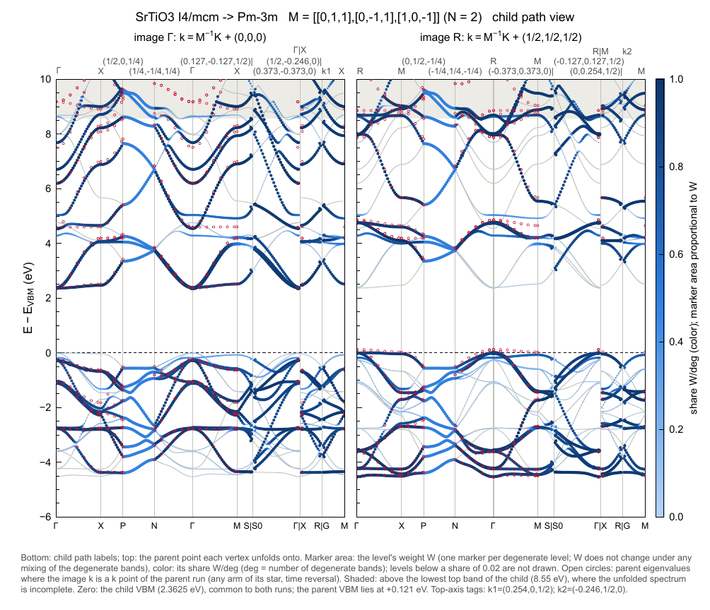
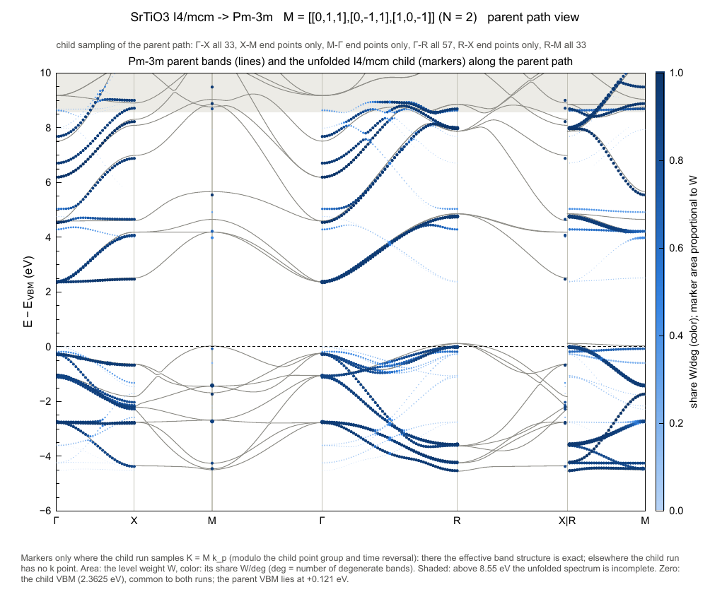
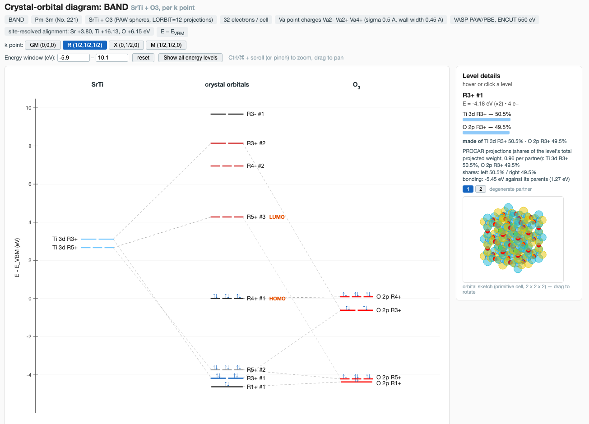
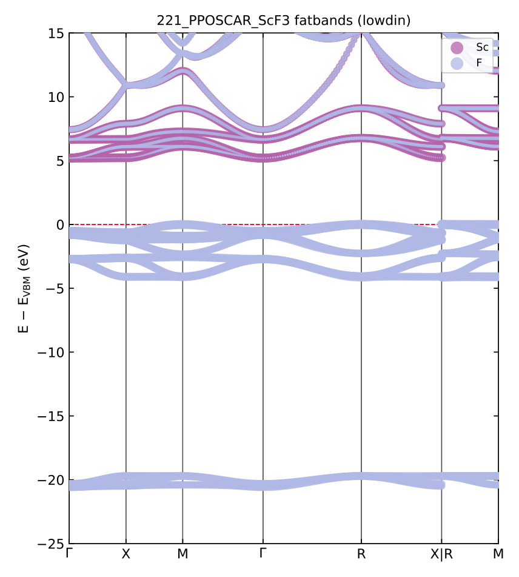

crystod (main command)#
The main command performs the SALC (symmetry-adapted linear combination)
analysis of crystal orbitals — no mode flag is needed. It also hosts the
crystal-orbital diagram (--diagram, with the band structure and DOS of the
same calculation), the interactive SALC viewer (--visualize), the
star-of-k display (--star-of-k), the band irreps of a finished VASP run
(--extract-irrep), the unfolding of the bands of a low-symmetry VASP run
onto the Brillouin zone of its high-symmetry parent run (--unfold) and the
check of the response tensors of a VASP run against the symmetry of its
structure (--check-symmetry).
I want to … |
command |
|---|---|
know which irreps an orbital spans at every k point |
|
… with spin-orbit coupling (double-valued irreps) |
|
know which irreps the spin (magnetic) configurations of a site span at every k point |
|
know which orbitals may hybridize at one k point |
|
draw the crystal-orbital diagram |
|
know whether the band-edge optical transition is dipole-allowed |
|
see the SALCs in 3D |
|
see the crystal eigen-levels and their wave functions in 3D |
|
list the arms of a star of k |
|
label the bands of a finished VASP run with irreps, straight from its WAVECAR |
|
see the bands of a distorted phase in the Brillouin zone of its parent, from two ordinary VASP band runs |
|
check the Born charges, dielectric, piezoelectric, elastic and internal-strain tensors of a VASP run against the symmetry of the structure |
|
1. Theoretical background#
See also
Theory: 1. Theoretical background — the
representation matrices, the character/reduction formula and the projection
operator on which every command of this page (and of crystod-group /
crystod-mag) is built, followed by the background of the single features
of every command page (the Theory boxes of the sections below lead there).
2. Irreps of SALC#
Example directory: example/02_salc (testsuite section 2); after pip install: crystod-example 02
Note
The example/... paths on this page are those of a clone of the repository,
used from its root. After pip install CrystOD, run crystod-example NN (the
number of the example directory) in your working directory first: it copies
that directory and the shared test_POSCARs/ into ./example/, and the
commands then run from there unchanged (see crystod-example).
Which symmetry types do the crystal orbitals built from one orbital shell of one element span? Give the structure, the element and the shell: CrystOD decomposes the crystal orbitals built from them into the irreducible representations (irreps) of the little group at each special k point.
See also
Theory: Irrep labels and the frame of a structure — which frame the labels refer to, and how star arms, k + G, symmetry lines and -k partners are named; From matrices to irreps — the reduction formula behind the decomposition.
Input |
Command |
Output |
|---|---|---|
POSCAR, element, orbital shell |
|
terminal: the irreps of the Ti d crystal orbitals at every special k point |
the same, one k point |
add |
the decomposition at that k point only |
the same, with the character table |
add |
also the little-group character table, written to |
POSCAR, element |
|
the irreps of the spin configurations of the sites (below) |
POSCAR, element, orbital shell |
add |
the double-valued irreps of a spin-orbit calculation (below) |
crystod -c example/test_POSCARs/221_PPOSCAR_SrTiO3 --element Ti --orbital d
* Crystal Orbitals *
k point (primitive): GM [0.0, 0.0, 0.0]
little group of k : Pm-3m (221)
irreps : 1.0 [GM3+(2)] + 1.0 [GM5+(3)]
k point (primitive): R [0.5, 0.5, 0.5]
little group of k : Pm-3m (221)
irreps : 1.0 [R3-(2)] + 1.0 [R4-(3)]
k point (primitive): X [0.0, 0.5, 0.0]
little group of k : P4/mmm (123)
irreps : 1.0 [X2-(1)] + 1.0 [X3-(1)] + 1.0 [X4-(1)] + 1.0 [X5-(2)]
k point (primitive): M [0.5, 0.5, 0.0]
little group of k : P4/mmm (123)
irreps : 1.0 [M1+(1)] + 1.0 [M3+(1)] + 1.0 [M4+(1)] + 1.0 [M5+(2)]
How to read the output.
k point (primitive): the label of the special k point and its coordinates in the primitive reciprocal basis. When--kpointis omitted, all special k points of the space group are analyzed.little group of k: the space-group type of the little group of k.irreps: each irrep with its multiplicity and, in parentheses, its dimension (1.0 [GM3+(2)]: GM3+ once, two-dimensional).The labels are ISO-IR labels and refer to one frame per structure: an input in the ISO-IR setting keeps its own axes and origin (with Sr or Ti at the origin of SrTiO3 the octahedral tilt is
R5-orR4+), and so does a diagonal n1 x n2 x n3 supercell of it of any size, which is labelled like the cell; any other input gets a canonical frame of the crystal, which keeps the input’s own origin when that is the origin of a standard description. Compare labels between inputs given in the same setting. Any arm of a star and any copy k + G of a k point get the same labels; symmetry lines, the -k partners (PA,LE,DU) and the seekpath names that--visualize --kpointand--star-of-ktake are described in Irrep labels and the frame of a structure.The atoms of an element need not be contiguous in the POSCAR. A file whose species blocks repeat, such as SrTiO3 written as
O Ti O Sr O/1 1 1 1 1, gives the same output as the same crystal written asSr Ti O/1 1 3: the analysis takes exactly the atoms of the element, wherever they stand in the file. The survey--element O --orbital pprintsO (3)under* Element (number of atoms) *, the Wyckoff letters['c', 'c', 'c']and, at X, the 9-dimensional O p decomposition1.0 [X1+(1)] + 1.0 [X2+(1)] + 1.0 [X3-(1)] + 2.0 [X5+(2)] + 1.0 [X5-(2)]; with--kpoint Xthe species line readsO_p (3)under* Orbital (number of atoms) *, as for the contiguous file. The same holds for--atomic-orbitaland--visualize, where the atom labels of the coefficient lines follow the order of the file.
Options
Options.
--kpoint K: one k point, a label or coordinates. A name given to--kpointis resolved in the frame of the labels, and given coordinates are named by the same labeller, so a printed name has the letters of the labels below it, also for an input outside the ISO-IR setting.--show-irrep-tableadditionally prints the little-group character table at the selected k point (with--kpoint; the survey over all special points prints no table). It also writes that table toirrep_table.xlsxin the working directory, without a message and overwriting an existing file; with--atomic-orbitaland no--kpointit prints one table per special k point and the file keeps the last one. The export goes through pandas and needsopenpyxl(orXlsxWriter), which is not a dependency of CrystOD: without either the run stops after the table header withModuleNotFoundError: No module named 'openpyxl'(pip install openpyxl).
Spin configurations (--axial)#
Which magnetic orderings can the sites of one element take at each k point,
sorted by symmetry? --axial takes the place of --orbital: every site of the
element carries one axial vector (Rx, Ry, Rz), a magnetic moment, and the
output lists the irreps of the spin configurations of those sites (the
magnetic representation).
See also
Theory: Spin configurations and the axial-vector representation —
the rotation character of an axial vector, why complex pairs are merged for a
real spin configuration, and the check against crystod-mag on all 230 space
groups.
Input |
Command |
Output |
|---|---|---|
POSCAR, magnetic element |
|
terminal: the irreps of the spin configurations of the Ti sites at every special k point |
the same, one k point |
add |
the decomposition at that k point |
the same structure, the spin bases themselves |
|
the symmetry-adapted spin bases with their magnetic space groups and MAGMOM lines |
For SrTiO3 with Ti on the origin (1a):
crystod -c POSCAR_SrTiO3 --element Ti --axial
* Element (number of atoms) *
Ti (1)
* Wyckoff letters and site symmetry letters *
['a']
['m-3m']
* Basis *
Rx, Ry, Rz
* Crystal Orbitals *
k point (primitive): GM [0.0, 0.0, 0.0]
little group of k : Pm-3m (221)
irreps : 1.0 [GM4+(3)]
k point (primitive): R [0.5, 0.5, 0.5]
little group of k : Pm-3m (221)
irreps : 1.0 [R4+(3)]
k point (primitive): X [0.0, 0.5, 0.0]
little group of k : P4/mmm (123)
irreps : 1.0 [X3+(1)] + 1.0 [X5+(2)]
k point (primitive): M [0.5, 0.5, 0.0]
little group of k : P4/mmm (123)
irreps : 1.0 [M3+(1)] + 1.0 [M5+(2)]
How to read the output.
* Basis *:Rx, Ry, Rz, the three components of the moment on every site; the irreps are those of the spin configurations. On an inversion centre they are those of--orbital pwith the parity flipped (inversion keeps a spin).GM4+ is the ferromagnet, R4+ the G-type antiferromagnet with the moments in any direction; at X the moments along the wave vector (X3+) separate from the two directions perpendicular to it (X5+).
The labels depend on the frame: the bundled
example/test_POSCARs/221_PPOSCAR_SrTiO3has Sr on the origin and Ti on 1b, and gives the labels of that frame: GM4+, R5-, X1- + X5-, M2+ + M5+.The labels are the ordinary ISO-IR irreps of the little group, without the
mprefix ISOTROPY gives the time-odd irreps (GM4+ here is mGM4+ there), as in crystod-mag.At a time-reversal-invariant k point a complex irrep and its conjugate are printed once under the pair label with the real dimension,
2.0 [GM3+GM4+(2)]for the Ti sites of P4/m Ti2Ga3, where--orbitallistsGM3+(1)andGM4+(1)separately. These are exactly the terms of the survey ofcrystod-mag -c POSCAR --element EL.
Options and limits
Options and limits.
--kpoint(a label or coordinates) and--show-irrep-tablework as for--orbital; with--kpointthe header reads* Element (number of atoms) *and* Basis *.--axialdoes not take--spinor, since a magnetic moment is single-valued, and it is refused with--atomic-orbital,--visualize,--diagramand the other modes.In Python the same decomposition is
CrystalOrbital(cell).irreducible_decomposition(k, "Ti", "axial"), which returns the unmerged irreps.
Double-valued irreps (--spinor)#
Which irreps do the orbitals span once spin-orbit coupling is on? With
--spinor every orbital carries spin 1/2 and the little groups are the
double groups: the crystal orbitals are decomposed into the double-valued
(spinor) irreps, those of a calculation with spin-orbit coupling.
--atomic-orbital takes the flag as well.
See also
Theory: Double-valued irreps and their names — the naming rule (fingerprint, index, ties, arms of a star, SU(2) lift), the names at Γ of all 32 point groups next to Bradley & Cracknell’s Table 6.5 and the two families where they differ, the checks, and the limits of the comparison with other tables.
Input |
Command |
Output |
|---|---|---|
POSCAR, element, orbital shell |
|
terminal: the double-valued irreps at every special k point |
POSCAR, orbital pairs, one k point |
|
terminal: the orbitals that may hybridize in each double-valued irrep at R |
the same, with the character table |
add |
the double-valued character table, with the names |
crystod -c example/test_POSCARs/221_PPOSCAR_SrTiO3 --element Ti --orbital d --spinor
* Crystal Orbitals *
k point (primitive): GM [0.0, 0.0, 0.0]
little group of k : Pm-3m (221)
irreps : 1.0 [-GM7+(2)] + 2.0 [-GM8+(4)]
k point (primitive): R [0.5, 0.5, 0.5]
little group of k : Pm-3m (221)
irreps : 1.0 [-R6-(2)] + 2.0 [-R8-(4)]
k point (primitive): X [0.0, 0.5, 0.0]
little group of k : P4/mmm (123)
irreps : 2.0 [-X6-(2)] + 3.0 [-X7-(2)]
k point (primitive): M [0.5, 0.5, 0.0]
little group of k : P4/mmm (123)
irreps : 3.0 [-M6+(2)] + 2.0 [-M7+(2)]
The ten Ti 3d spin-orbitals at Γ are the scalar ones times the spin-1/2 representation D(1/2):
Ti 3d at Γ |
scalar ( |
with |
|---|---|---|
e_g |
|
|
t2g |
|
|
the shell |
|
|
How to read the output.
A name
-K<n><p>is the double-group label with its overbar written as a leading-(R̄6+ is-R6+, as in the Bilbao tables), the ISO-IR k label, an index n that continues after the single-valued irreps of the k point, and the parity suffix+/-where the single-valued irreps carry one; parity partners share n. At Γ of Pm-3m the single-valued irreps are GM1± to GM5±, so the double-valued ones are-GM6to-GM8.The numbering is that of Bradley & Cracknell (1972), Table 6.5 (Koster’s Γ numbers), apart from two exceptions (32, 3m, -3m and 4, -4, 4/m). One rule serves
--spinor,--atomic-orbital --spinor,--extract-irrepand the WAVECAR-overlap engine (crystod.wavecar_irreps.double_valued_namesin Python), so the four name the irreps of one cell alike. An irrep has one name on the whole star of k and at every k + G.
More on reading the output
A
NOTE:line under the irreps of a k point says where the names differ from Bradley & Cracknell (with and without--kpoint, and with--atomic-orbital):
crystod -c example/test_POSCARs/166_PPOSCAR_Bi --element Bi --orbital p --spinor --kpoint 0 0 0
* Atomic Band Irreducible Representations *
1.0 [-GM4+(1)] + 1.0 [-GM4-(1)] + 1.0 [-GM5+(1)] + 1.0 [-GM5-(1)] + 2.0 [-GM6+(2)] + 2.0 [-GM6-(2)]
NOTE: Bradley & Cracknell (1972) number the two-dimensional irrep GM4+- and the pair GM5+-, GM6+- (Table 6.5); here the pair is -GM4+-, -GM5+- and the two-dimensional irrep -GM6+-
This line appears where the proper parts of the little co-group form the point group 32 (32, 3m and -3m: Γ and T of R-3m, L of Fm-3m and Fd-3m) and the irreps are, per parity, two one-dimensional and one two-dimensional. Where they form a cyclic group of order 3, 4 or 6 and the irreps at k hold a complex-conjugate pair (Γ of P3 or P4, for example), the line is
NOTE: the complex-conjugate pairs are ordered after the single-valued ISO-IR labels; Bradley & Cracknell (1972) Tables 6.5 and 6.14 number them inconsistently.The three-line remark under
* Atomic Orbital *(survey) or* Spinor *(--kpoint,--atomic-orbital) states the convention once per run (its text changed in v0.4.7: it used to call the names CrystOD’s own convention and now gives the Bradley & Cracknell numbering and its exceptions).A double-valued irrep that cannot be named keeps the generic key
irrep_i(dim), and aNOTE:line under the irreps gives the reason; on the special points of the structures inexample/test_POSCARsevery irrep is named.
The orbitals that may hybridize (--atomic-orbital --spinor)
With --atomic-orbital, the orbitals that may hybridize at R once spin-orbit
coupling is on:
crystod -c example/test_POSCARs/221_PPOSCAR_SrTiO3 --atomic-orbital Ti_d O_p --spinor --kpoint 0.5 0.5 0.5
* Result *
-R6+(2):
-R6-(2): Ti(d) O(p)
-R7+(2):
-R7-(2): O(p)
-R8+(4):
-R8-(4): Ti(d) O(p)
--atomic-orbital --spinor: as without--spinor, the orbitals on one line may hybridize; at R the Ti d orbitals may mix with O p in-R6-and-R8-.
Limits
Limits.
The names are not the Bilbao Crystallographic Server (BCS) numbering: at Γ of Pm-3m, CrystOD’s
-GM6+,-GM6-,-GM8+and-GM8-are BCS’s-GM6,-GM8,-GM10and-GM11. The overlap engine can put IrRep’s Bilbao names on its levels (--vasp-irrep-json).Where the numbering differs from Table 6.5, and anywhere away from Γ, compare a name with another table through the characters (
--show-irrep-table) or the fingerprint, not through the number.The two irreps of a tied complex-conjugate pair (little co-groups 2, m, 2/m, 32, 3m and -3m) can swap between frames related by an element of the Euclidean normalizer (an origin shift, an equivalent basis such as (-a,-b,c), a 60-degree rotation in the trigonal groups); compare names between inputs given in the same setting.
3. Crystal-orbital diagrams#
Example directory: example/03_hybridization (testsuite section 3); after pip install: crystod-example 03
Which atomic orbitals of a crystal may mix (hybridize) at a k point, and how
far apart do their bonding and antibonding crystal orbitals end up?
--atomic-orbital answers the first question from symmetry alone;
--diagram draws the quantitative crystal-orbital diagram, with the
extended-Hückel engine, PySCF or finished VASP runs (the subsections below).
This section also holds the band irreps of a VASP run (--extract-irrep) and
the unfolding of the bands of two VASP runs (--unfold).
Input |
Command |
Output |
|---|---|---|
POSCAR, orbital pairs ( |
|
terminal: for every irrep at the k point, the orbitals that may hybridize in it |
POSCAR, the two fragment sublattices |
|
terminal report and |
the same, PySCF installed |
add |
the diagram from three periodic PySCF calculations |
three finished VASP runs (crystal and two sublattice runs) |
|
the diagram from the VASP runs |
the same runs with their WAVECARs |
add |
the diagram without any energy alignment |
POSCAR, PySCF |
|
band structure, fatbands or DOS (PDF, CSV, TXT) |
Analyze the hybridization between selected atomic orbitals (ELEMENT_ORBITAL pairs):
crystod -c example/test_POSCARs/221_PPOSCAR_ScF3 --atomic-orbital Sc-d F-p --kpoint 0.5 0.5 0.5
* Result *
R1+(1): F(p)
R1-(1):
R2+(1):
R2-(1):
R3+(2): Sc(d) F(p)
R3-(2):
R4+(3): F(p)
R4-(3):
R5+(3): Sc(d) F(p)
R5-(3):
How to read the output. For each little-group irrep at the k point, the orbitals that transform as the relevant irreps are listed — orbitals sharing a line are symmetry-allowed to hybridize. We can see that Sc-d and F-p states can be hybridized when they are ruled by the irreps of R3+ and R5+.
Quantitative crystal-orbital diagrams using extended-Hückel engine (--diagram)#
--diagram draws the quantitative crystal orbital diagram (COD) — the
crystalline analogue of the molecular-orbital diagram of
crystod-mol --diagram --ao-left ... --ao-right ...: which levels of two
sublattices mix into bonding and antibonding crystal orbitals at every special
k point, and which stay nonbonding.
See also
Theory: How the orbital diagrams are computed — the symmetry-adapted Bloch basis, the exact STO lattice sums, the Ewald point-charge ligand field, the overlap-catastrophe cut-off and their validation; Basis and point-charge field of the extended-Hueckel crystal-orbital diagram — the full-electron basis, the archived atomic level energies and the point charges each fragment feels.
Input |
Command |
Output |
|---|---|---|
POSCAR, the two fragment formulas |
|
terminal: per special k point the fragment levels and the crystal orbitals with irrep, degeneracy, occupation and composition; |
the same, one special point |
add |
the diagram at that point only |
the same, other formal charges |
add |
the point charges of the given oxidation states |
--co-left/--co-right split the crystal into two fragment sublattices by
chemical formula (every atom must belong to one side; a count such as O3
validates against the primitive cell). Each fragment carries every core and
valence shell of every atom and feels the removed sublattice as a
point-charge lattice with the formal oxidation states (guessed with
pymatgen; override with --oxidation Sr=+2 Ti=+4 O=-2):
crystod --diagram -c 221_PPOSCAR_ScF3 --co-left Sc --co-right F3
# -> CrystOD_221_PPOSCAR_ScF3.html
The terminal prints, per k point, the two fragment columns and the crystal orbitals with their irrep, degeneracy, occupation and composition — at R the textbook perovskite pattern:
* k point R (1/2,1/2,1/2) *
Sc : ... Sc 3d R5+ (-9.08), Sc 3d R3+ (-7.62), ...
F3 : ... F 2p R1+ (-19.67), F 2p R3+ (-19.33), F 2p R5+ (-17.56), F 2p R4+ (-17.30)
crystal :
...
R3+ #1 -19.46 eV x2 4e F 2p R3+ 93.5% Sc 3d R3+ 6.5%
R5+ #1 -17.70 eV x3 6e F 2p R5+ 95.4% Sc 3d R5+ 4.6%
R4+ #1 -17.30 eV x3 6e F 2p R4+ 100.0%
R5+ #2 -8.18 eV x3 Sc 3d R5+ 95.4% F 2p R5+ 4.6%
R3+ #2 -5.21 eV x2 Sc 3d R3+ 93.5% F 2p R3+ 6.5%
How to read the output.
The two fragment lines list the fragment levels with their irrep and energy in eV (
Sc 3d R5+ (-9.08)); thecrystallines give each crystal orbital with its irrep and running number (R3+ #1), energy, degeneracy (x2), occupation (4e) and composition (F 2p R3+ 93.5% Sc 3d R3+ 6.5%).Fragment orbitals sharing an irrep split into bonding and antibonding crystal orbitals; orbitals without a same-irrep partner stay rigorously nonbonding — the COD mixing rule. In the table above the eg-derived
R3+pair splits strongly (σ / σ*), the t2g-derivedR5+pair weakly (π / π*), andR4+has no Sc partner at all and remains 100 % F 2p.
The written HTML is the diagram below — the live output of the command, one energy diagram per k point (the buttons switch k), fragment | crystal | fragment columns with correlation lines weighted by the composition, electron arrows and HOMO/LUMO markers. Hover any level for its wave-function sketch (all atomic-orbital components on the k-commensurate supercell, VESTA-style +/- lobes, drag-rotatable):
Open the ScF3 crystal-orbital diagram full-screen
Opening the page on one k point
The page itself keeps every k point, and the one it opens on can be chosen in
the URL — CrystOD_POSCAR.html?k=R (or #R) — which is what the embedded
diagram above does. That makes a single file embeddable anywhere in the star
without regenerating it; the k buttons still switch freely afterwards.
Options
Options.
option |
meaning |
|---|---|
|
overrides the electron count (default: all electrons of the neutral atoms) |
|
restricts the diagram to one special point |
|
draws the hover sketches in the conventional cell |
|
the formal oxidation states of the point charges (default: guessed with pymatgen) |
|
as usual |
Limits
Limits.
The extended-Hückel parameters are the table of
crystod-moland cover 52 elements up to Bi (H, Li-F, Na-Cl, K-Br, Rb, Sr, Zr, Nb, Mo, Cd, Sn-I, Cs, Ba, La, Ce, Sm, Gd, Yb, Lu, Pb, Bi); any other element stops the run with an ERROR that lists them (AgCl:ERROR: no extended-Hueckel parameters for element Ag (supported: H, Li, ...)).The valence 4f shells of Ce, Sm, Gd, Yb and Lu enter the inter-site overlaps like every other shell, so the diagram shows their covalency (CeO2 at Γ,
--co-left Ce --co-right O2:GM4- #4 -11.31 eV x3 Ce 4f GM4- 99.4% O 2p GM4- 0.5%).
Quantitative crystal-orbital diagrams using PySCF (--diagram --pyscf)#
--pyscf replaces the extended-Hueckel model by three periodic PySCF
calculations that share one atomic-orbital space — the crystalline
counterpart of crystod-mol --diagram --pyscf. It needs the optional PySCF
dependency, pip install "CrystOD[quantum]" (see Installation);
without it the run stops with a one-line ERROR: naming this command.
See also
Theory: How the orbital diagrams are computed
— the counterpoise (ghost-atom) construction, the neutrality bookkeeping, how
the deep-level alignment anchor is chosen, and why --onsite takes the
fragment columns from the crystal Fock;
Open shells, smearing and exact degeneracies of the periodic PySCF diagram
— neutral-atom sublattices, the spin states of the atomic columns, the bond
colours and the group-averaged Fock.
Input |
Command |
Output |
|---|---|---|
POSCAR, the two fragment formulas |
|
|
the same, one crystal SCF only |
add |
the single-Hamiltonian diagram (below) |
the same, neutral-atom sublattices |
add |
no point charges; odd-electron sublattices with Fermi smearing |
crystod --diagram -c 221_PPOSCAR_ScF3 --pyscf --co-left Sc --co-right F3
crystod --diagram -c 221_PPOSCAR_SrTiO3 --pyscf --co-left SrTi --co-right O3
# -> CrystOD_{cell}_pyscf.html
calculation |
real atoms |
point charges |
|---|---|---|
left fragment |
the |
the right sublattice |
right fragment |
the |
the left sublattice |
crystal |
everything |
none |
How to read the output.
The removed sublattice stays in the basis as ghost atoms and acts on the fragment as its formal-charge point lattice (
--oxidation Sc=+3 F=-1overrides the guessed oxidation states): each fragment column is the electronic state before chemical bond formation.The three columns are put on one scale by deep-level (XPS-style) alignment against the deepest chemically inert fragment level (printed with anchor, purity and k-spread);
--no-alignkeeps the raw references instead.Crystal-orbital lines are colored by bonding character (blue = bonding, black = nonbonding, red = antibonding), and the fragment columns are drawn in the VESTA color of each level’s dominant element.
Degeneracies are exact by construction: all displayed levels are re-diagonalized from the group-averaged Fock, whose invariance under the AO representation is verified against PySCF’s own overlap matrix (
D+ S D = S, residual printed per k point).--oxidation Al=0 N=0switches the model to neutral-atom sublattices (the extended-Hückel engine’s convention): the point-charge lattice then vanishes, and a sublattice with an odd electron count per cell (neutral Al: 3) is solved spin-restricted with Fermi smearing — the run says so, and--sigmasets the width (default 0.2 eV for such cells). Open-shell atomic columns display the alpha channel (said in the tooltip).The same-irrep resonance-integral tables are written to
<output-stem>_coupling.txtnext to the HTML.
Options
Options. crystod --help lists every value these take.
option |
meaning |
|---|---|
|
default |
|
default |
|
default |
|
default 200 Hartree |
|
default |
|
drop basis shells above l = L |
|
the population measure of the per-(element, shell) rows and the sketch lobe sizes |
|
exclude the removed sublattice’s basis functions from the fragment calculations |
|
keep the raw SCF eigenvalues instead of re-diagonalizing the group-averaged Fock (debug) |
|
keep the raw references |
|
Fermi smearing of the SCF occupations in eV; default 0, integer occupations, with two exceptions that apply whatever |
|
the SCF checkpoint (below) |
|
the single-Hamiltonian diagram (below) |
--sigma is refused without --pyscf: the extended-Hückel engine runs no
SCF, and the VASP engines read finished runs (the width of the Va point
charges of --vasp-setup is --vasp-sigma).
The SCF cache
The SCF cache.
Because a three-SCF
--pyscfrun is expensive, the converged densities are cached automatically asCHK_{formula}.chk(rutile TiO2:CHK_TiO2.chk, the reduced formula in conventional chemical order).The next run on the same structure with the same options reads it and skips all three SCFs; a run whose options differ says so and recomputes, overwriting the file;
--no-chkneither reads nor writes it.--chk FILEkeeps the strict behaviour instead: that file is yours, so a parameter mismatch aborts withcrystod --chk-infoguidance rather than overwriting it.
Basis sets, pseudopotentials and functionals
Basis sets, pseudopotentials and functionals.
Of the GTH basis sets PySCF ships, only
gth-szv-molopt-srandgth-dzvp-molopt-srcover the transition metals and beyond (H–Rn, with the lanthanides La–Lu absent from every GTH set, so--pyscfcannot run on a rare-earth compound at all — the extended-Hückel engine can).The larger sets (
gth-tzvp,gth-qzv2p, thegth-aug-*andgth-cc-*families, …) stop at Ar or cover a handful of light elements, so they buy diffuse and polarization freedom only for main-group compounds.A basis or pseudopotential without an entry for one of the elements is refused with the list of sets that do cover the structure.
For
--pseudo,gth-pbe,gth-pade(LDA),gth-ldaandgth-hfrevspan H–Rn,gth-blypreaches Bi, and the rest are light-element only.--xcaccepts most libxc names (a name libxc does not know, and a VV10 functional such aswb97m-v— PySCF’s periodic code has no nonlocal correlation — are both refused up front with the reason); LDA (lda,svwn), GGA (pbe,pbesol,revpbe,blyp,bp86,pw91,b97-d), meta-GGA (scan,r2scan,tpss,revtpss) and hybrids (b3lyp,pbe0,hse06,m06,wb97x, …) all run here, plushffor Hartree–Fock; hybrids evaluate exact exchange on the FFT grid, so give them--ke-cutoff 150or more.
--onsite — the single-Hamiltonian diagram
--onsite — the single-Hamiltonian diagram. Only the crystal SCF runs, and
the fragment columns are the per-(element, shell) on-site multiplets of the
converged crystal Fock — one level per induced irrep, no point charges and no
alignment step, so a crystal level’s drop or rise against its parent is the
orbital interaction:
crystod --diagram -c 225_PPOSCAR_NaCl --pyscf --onsite --co-left Na --co-right Cl \
--kpoint X --kmesh 1 1 1 --ke-cutoff 80
Band irreps of a VASP run (--extract-irrep)#
Example directory: example/03_hybridization/vasp_wavecar (testsuite section 8); after pip install: crystod-example 03 (its SrTiO3 and InP_SOC runs; SrTiO3_ISPIN2 and SrTiO3_SOC are not in the pip package)
Which irrep does each band of a finished VASP calculation carry?
--extract-irrep labels the electronic bands of one finished VASP run
with the irreducible representations of the little groups of its k points,
straight from the plane-wave coefficients of its WAVECAR — no crystal-orbital
diagram, no sublattice runs, no PROCAR. The labels are CrystOD’s ISO-IR labels
— the names every other command prints — and, for a spin-orbit run, the
double-valued names of crystod --spinor (-R6+; the convention is in
Double-valued irreps).
See also
Theory: Band irreps from the plane waves of a WAVECAR — the labelling engine, how a level of several irreps is classified by Wigner’s test of time reversal (cases b and c), and what the labels of a spin-polarized or spin-orbit run mean.
Input |
Command |
Output |
|---|---|---|
a finished VASP run: WAVECAR ( |
|
terminal: the irrep of every level at every special k point the WAVECAR holds, and the band edges |
the same, selected k points |
add |
those k points only |
the same, every k point, an energy window, a file |
add |
every k point of the run, the levels from -3 to 3 eV, and a YAML file |
an |
add |
one spin channel |
crystod --extract-irrep # the run in the current directory
crystod --extract-irrep BAND # a run directory (BAND/WAVECAR, BAND/POSCAR)
crystod --extract-irrep BAND/WAVECAR # the WAVECAR file itself
crystod --extract-irrep BAND --kpoint X R # selected special points (labels or coordinates)
crystod --extract-irrep BAND --all-kpoints --window -3 3 -o band_irreps.yaml
On the fixture of the example directory (SrTiO₃, a 4×4×4 Γ-centred mesh, 24 bands):
crystod --extract-irrep example/03_hybridization/vasp_wavecar/SrTiO3
* VASP run *
directory .../vasp_wavecar/SrTiO3
WAVECAR .../vasp_wavecar/SrTiO3/WAVECAR (1.1 MB, complex64)
structure .../vasp_wavecar/SrTiO3/POSCAR (SrTiO3, 5 atoms; the irrep labels refer to this cell)
NBANDS 24, NKPTS 10, ISPIN 1, spin-orbit no, ENCUT 250 eV
E_fermi 2.7258 eV (OUTCAR)
VBM 2.4653 eV (highest occupied eigenvalue over all 10 k points: k#9 [1/2, 1/2, 1/4], band 16)
energy zero vbm: the energies below are E - E_VBM (2.4653 eV subtracted)
* Space group *
Pm-3m (221)
* Special k points in the WAVECAR *
GM [ 0.0000000, 0.0000000, 0.0000000] k#1 Pm-3m (221)
R [ 0.5000000, 0.5000000, 0.5000000] k#10 Pm-3m (221)
X [ 0.5000000, 0.0000000, 0.0000000] k#3 P4/mmm (123)
M [ 0.5000000, 0.5000000, 0.0000000] k#6 P4/mmm (123)
* Band irreps at GM [0, 0, 0] *
level bands E - E_VBM (eV) deg irrep note
1 1 -32.6083 1 GM1+ (A1g)
2 2 -17.7333 1 GM1+ (A1g)
3 3-4 -16.7531 2 GM3+ (Eg)
4 5-7 -14.5969 3 GM4- (T1u)
5 8-10 -2.6590 3 GM4- (T1u)
6 11-13 -0.9911 3 GM5- (T2u)
7 14-16 -0.2407 3 GM4- (T1u)
8 17-19 1.8051 3 GM5+ (T2g)
9 20-21 4.1365 2 GM3+ (Eg)
10 22-23 5.5953 2 GM3+ (Eg)
11 24 6.2290 1 GM1+ (A1g)
...
* Band irreps at M [1/2, 1/2, 0] *
level bands E - E_VBM (eV) deg irrep note
...
12 16 -0.1112 1 M3+
13 17-18 3.7195 2 M5+
...
19 24 9.7780 1 - incomplete: the band list ends inside this multiplet (multiplicities M5+ 0.50)
* Band edges *
k point VBM (eV) irrep CBM (eV) irrep direct gap
GM k#1 -0.2407 GM4- (T1u) 1.8051 GM5+ (T2g) 2.0458
R k#10 -0.1096 R4+ 4.3840 R5+ 4.4936
X k#3 -0.5847 X5- 1.9592 X4+ 2.5438
M k#6 -0.1112 M3+ 3.7195 M5+ 3.8307
gap 1.8051 eV (indirect) over all 10 k points of the file: VBM at k#9 [1/2, 1/2, 1/4] (band 16), CBM at k#1 GM (band 17)
The nine O 2p bands (8–16) carry 2 GM4- + GM5- at Γ and the five Ti 3d bands
GM5+ + GM3+ — the SALC decompositions of crystod --element O --orbital p
and --element Ti --orbital d (section 2), now with the energies of the run.
On the 288-k-point band-structure run of the same crystal (ENCUT 550 eV,
32 bands, a 135 MB WAVECAR) the four special points take under two seconds:
only the k points that are analysed are read, one at a time.
How to read the output.
* VASP run *gives the run (NBANDS, NKPTS, ISPIN, spin-orbit, ENCUT from the WAVECAR header), the Fermi level (from OUTCAR, else vasprun.xml, DOSCAR or the WAVECAR header; the source is named) and the valence-band maximum: the highest eigenvalue with an occupation above 1/2 over every k point and spin channel of the file, as--vasp-zero vbmtakes it.* Special k points in the WAVECAR *lists the analysed k points: the label, the fractional coordinates as stored in the file, the 1-based index in the file (k#), and the little group as the space-group type of its operations (the SALC mode’s “little group of k”).One table per k point: the level number (1-based, in energy order over all bands of the file), the band indices (1-based), the energy relative to the zero (4 decimals), the degeneracy, the irrep — at Γ followed by its Mulliken symbol in parentheses — and a note.
* Band edges *gives, per k point, the highest occupied and the lowest empty level with their irreps and the direct gap, and the gap over the whole file (metallicinstead when bands are partially occupied).
More on reading the output
Bands within
--degeneracy-tol(default 1 meV) form one level, whatever the irreps of its bands; a level of several irreps is labelledA/B. A complete level has the degeneracy of its irrep (or the summed dimensions ofA/B), so the degeneracies of a k point add up to NBANDS.The note column reports what the engine flags, never hidden:
note |
meaning |
|---|---|
|
the top band of the file cuts a multiplet (raise NBANDS to label it); the irrep column is |
|
a level below the top whose characters are not integral (an unconverged or symmetry-broken run) |
|
two irreps that time reversal makes degenerate (Wigner’s case c): |
|
two copies of one irrep that time reversal makes degenerate (case b): the Kramers pairs |
|
irreps within the degeneracy window that no symmetry holds together; when the run returns them as pure states, the irrep of each band (block) and their spread follow |
|
the top band of the file holds one member of a pair |
|
the partner lies outside the window: a magnetic (time-reversal-breaking) spin-orbit run, or a symmetry-broken one |
|
a multiplet split numerically by more than |
|
a symmetry operation carries more than 0.1 % of a state’s norm out of its level |
|
plane-wave images missing from the coefficient list (over 1 % stops the run) |
VASP often returns the two bands of a time-reversal pair as pure states, one irrep each;
--extract-irrepstill lists them as one level (7-8 -1.0127 2 -L4/-L5 time-reversal pair (-L4 + -L5)onexample/03_hybridization/vasp_wavecar/InP_SOC), and the per-band irreps are in the Python result (BandLevel.parts).
Options
Options.
k points. By default every special point of the space group — the ISO-IR points
crystod-bz --show-kpointlists, the same list--diagramdraws — that the WAVECAR holds is analysed, found on any arm of its star and modulo reciprocal-lattice vectors in the run’s own reciprocal basis (the fixture stores X as (1/2, 0, 0)). A special point that occurs several times (a band path passes Γ twice; a full mesh holds every arm) is analysed at its first occurrence and the other indices are listed (also k#149). Special points that are absent are named under the block.--kpointrestricts the analysis to special-point labels (GM,X, …;G/GammameanGM) and/or fractional coordinates (0 1/2 0, or0,1/2,0), in the order given; a coordinate off the special points (on a line or plane) is named by the ISO-IR k label of its little group (LD,DT, …).--all-kpointslabels every k point of the file — symmetry lines, planes and general points included (GP, little groupP1 (1)); on the 288 points of the SrTiO₃ band-structure run that takes about 40 s (mostly the symmetry set-up of each little group).--zero vbm(default),efermiorraw(the run’s own eigenvalues);--window EMIN EMAXlists only the levels in that range, relative to the zero, keeping their level numbers (the band edges are taken from all levels).--degeneracy-tol EV(default 1 meV, the overlap engine’s): bands within this window of the first band of a level are one level.Spin. An
ISPIN = 2run gives one table per spin channel (* Band irreps at GM [0, 0, 0], spin up *, thenspin down, at every k point);--spin up|downkeeps one channel. Each channel is labelled by the irreps of the space group of the POSCAR, which is exact for a ferromagnet; in an antiferromagnet whose spin sublattices are one species in the POSCAR the levels that the magnetic order splits come out unassigned.Spin-orbit coupling. A spin-orbit (
vasp_ncl,LSORBIT) run is recognised from the WAVECAR (each band record holds two spinor components): one band holds one electron and the levels carry the double-valued irreps (-GM8+,-R6+; the CsPbI₃ valence-band maximum is-R6+, its conduction-band minimum-R6-), named as bycrystod --spinorand the overlap engine (Double-valued irreps). They have no Mulliken symbols; IrRep’s Bilbao names (--vasp-irrep-jsonof the overlap engine) are not offered here.
The YAML file
The YAML file. -o FILE writes the same content as YAML, in the layout of
phonon_irreps.yaml: the metadata (crystod_version, run with the
directory, WAVECAR, structure, NBANDS, NKPTS, ISPIN, spin_orbit, ENCUT,
E_fermi and its source, VBM and CBM, then space_group, energy_zero,
zero_energy, degeneracy_tol, window), the analysed kpoints
(k_label, k_position, k_index, little_group, copies), then irreps:
one entry per k point (and spin) with its list of levels — level,
bands (1-based), energy (eV relative to the zero), degeneracy, irrep
(null when unassigned), mulliken (Γ), occupation and note — and
finally band_edges and gap. yaml.safe_load reads it; without -o
nothing is written. In Python the same result is
crystod.salc.extract_band_irreps(path) (see Python API).
What the run needs, and the limits
What the run needs, and the limits.
LWAVE = .TRUE.(a WAVECAR ofvasp_stdorvasp_ncl; a gamma-onlyvasp_gamWAVECAR, whose coefficient list is halved, is refused) and the POSCAR the run was done with —-c FILEnames another file, but it must be the same cell and origin (the coefficients refer to them; a file in another setting is refused); CONTCAR is not read. The labels refer to that cell: the X, M and R labels depend on the choice of origin (seeexample/03_hybridization/vasp_SrTiO3/README).A primitive cell (a supercell WAVECAR folds several k points of the primitive zone onto one and is refused).
The sublattice runs of
crystod --diagram --vasp-setup(BAND_sublattice1,BAND_sublattice2) are labelled as well: eachVapoint-charge species of the POSCAR (Va2-,Va4+) is a species of its own, as in the overlap engine (the formula readsSrTi(Va2-)3); the labels are those the overlap engine gives the sublattice columns.Time reversal is assumed when a level is classified: a magnetic spin-orbit run (vasp_ncl with an ordered moment) breaks it, and its split pairs then carry the
time-reversal partner ... not in this levelnote.The k points to label must be in the run’s k list: a band-structure run (line mode or the zero-weight special points
crystod --diagram --vasp-setupwrites) or a Γ-centred mesh that contains them.Errors stop with one
ERROR:line: no WAVECAR at PATH, no POSCAR, no special point in the k list (use--all-kpointsor--kpoint), a requested k point that the file lacks (the available special points are listed), an empty, truncated or unreadable WAVECAR, or an unknown precision tag.
Electronic band unfolding of two VASP runs (--unfold)#
Example directory: example/09_band_unfold (testsuite section 9); not distributed: neither the pip package nor the repository holds its two runs (4.1 MB of WAVECARs), so the commands below run on your own parent and child band runs
Which band of the high-symmetry parent does each band of a distorted phase
come from? The bands of a low-symmetry child computed in its larger cell
come out folded into its smaller Brillouin zone (I4/mcm SrTiO3, two cubic
cells, has twice the bands of cubic SrTiO3 at every k). --unfold reads the
two finished band runs, the parent in its small cell and the child, and
draws the child’s bands in the Brillouin zone of the parent, every level with
its share on each parent wave vector it unfolds onto (the scheme of Popescu and
Zunger and of fold2Bloch). No new VASP run is needed: the two runs are the
ordinary band calculations of the two phases, each along its own path. It is
the electronic counterpart of
crystod-phonon --unfold,
which unfolds phonon bands from force constants.
See also
Theory: Electronic band unfolding — how the plane-wave weights of a band and the level weights of a degenerate level are defined and why the latter do not depend on the basis VASP returns, why only the integer matrix M enters, the symmetry transport between child k points, which parent path points a child run covers, and how the energy zero, the energy range and the alignment diagnostic are chosen.
Input |
Command |
Output |
|---|---|---|
two finished VASP band runs, parent and child (WAVECAR, POSCAR, KPOINTS and OUTCAR of each) |
|
terminal blocks (setup, paths, coverage, vertex tables, summary); |
the child run and the parent structure only |
|
page 1 only, without parent levels |
the same two run directories (no WAVECAR needed) |
|
|
either, another energy range |
add |
the figure and the tables in that range |
crystod --unfold --parent-wavecar SrTiO3_Pm-3m/BAND/WAVECAR --child-wavecar SrTiO3_I4mcm/BAND/WAVECAR
# -> band_unfold.pdf, band_unfold.dat, band_unfold.yaml


Page 1 of band_unfold.pdf for I4/mcm SrTiO3 unfolded onto Pm-3m (the two
runs above, default options). One panel per parent image, along the child’s
own path (child labels at the bottom; on top, the parent point each child
vertex unfolds onto): left the image Γ, k = M^-1 K, right the image R,
k = M^-1 K + (1/2, 1/2, 1/2). The thin grey lines are the child bands; every
level carries a marker whose area is its weight W on that image and whose
color is its share W/deg; the crimson circles are the parent eigenvalues where
the image k is a k point of the parent run. At the child Γ point the
conduction-band minimum (Ti 3d t2g, 2.36 eV) lies on the Γ image, and the top
valence level (-0.008 eV) on the R image, 0.13 eV below the valence-band
maximum of the parent at R (+0.121 eV). Above 8.55 eV (shaded) the unfolded
spectrum is incomplete. The second name of the R|G break, a fraction that has
no room to the right of its tick, is the tag k1 (k2 in the right panel),
listed in the footer.#
The weights. Each child level gets a weight W on every
parent image k = M^-1 K + g_i (A_child = M A_parent, N = det M images): the
share of its plane-wave coefficients that falls on that parent wave vector.
The weights of a level add up to its degeneracy and do not depend on how VASP
mixes the bands of a degenerate level; another of the equivalent settings of
the child in the parent (--trans-mat) puts another arm of a parent star on
an image, with the same weights. The markers of the figure have area W and
color W/deg; the tables print the share W/deg.
The vertex tables#
One table per distinct vertex of the child path lists the levels in the energy range of the tables, with their share W/deg on every image:
* Unfolded levels at the child path vertices *
child GM (0, 0, 0) (k#41, copies k#140, 219); images GM, R
E - E_VBM (eV) deg bands w(GM) w(R) parent E_par dE
-4.528 1 15 0.025 0.975 R -4.549 +0.021
-4.244 1 16 0.110 0.890 - - -
...
-0.275 1 27 0.953 0.047 GM -0.236 -0.039
-0.268 2 28-29 0.852 0.148 - - -
-0.183 1 30 0.347 0.653 - - -
-0.008 2 31-32 0.074 0.926 R 0.121 -0.128
2.365 2 33-34 0.957 0.043 GM 2.368 -0.004
2.390 1 35 0.921 0.079 GM 2.368 +0.021
4.285 1 36 0.441 0.559 - - -
4.543 1 37 0.999 0.001 GM 4.591 -0.049
4.758 2 38-39 0.046 0.954 R 4.858 -0.100
5.036 1 40 0.588 0.412 - - -
...
child P (1/4, 1/4, 1/4) (k#89); images g0 = (1/2,0,1/4), g1 = (0,1/2,-1/4)
E - E_VBM (eV) deg bands w(g0) w(g1) parent E_par dE
-4.389 2 15-16 0.500 0.500 - - -
-3.792 2 17-18 0.500 0.500 - - -
...
(the images are exchanged by a child operation (or time reversal) at this K, so every share is
1/2)
...
child S0 (k#185): equivalent to S (images permuted g0 <-> g1); see the summary
...
(levels with -5.5 <= E - E_VBM <= 6 eV; w(k) = W_k / deg, the share of the level's spectral weight
on the parent image k (the level carries deg x w; W = Re Tr(S^-1 P_k) over the deg bands,
invariant under any mixing of the degenerate bands); parent: the image (share >= 0.9) whose k is
a k point of the parent run (any arm, time reversal), E_par its nearest parent level, dE = E -
E_par)
NOTE: the tables list -5.5 .. 6 eV around the zero (from just below the valence block at or below
the zero, up to 6 eV); --window EMIN EMAX chooses the range (and the figure's).
The header names the vertex, its child K, its index in the WAVECAR (
k#, 1-based) and the other indices of the same K on the path, and the images: by their ISO-IR names where they are special points of the parent, else asg0,g1, … with their fractions (also when two images share a name).Every row is one level: its energy relative to the zero, its degeneracy and bands, and its share W/deg on every image (the shares of a level add up to 1).
parent,E_par,dE: for a level whose share of one image is at least 0.9, when that image is a k point of the parent run (on any arm of its star, or with time reversal): the image, the parent level nearest to the child level, and their difference. At the child Γ point the levels on the Γ image match parent Γ levels within 0.05 eV, the top valence level (bands 31-32) lies 0.128 eV below the valence-band maximum of the parent at R, and the R-derived conduction level of bands 38-39 0.100 eV below its parent level.Where an operation of the child (or time reversal) exchanges the images at K, as at P and N, every share is 1/N by symmetry, and a line under the table says so; such points are counted apart in the summary. A level that shows other shares there is one band of a degenerate pair that VASP split by more than
--degeneracy-tol(a larger tolerance joins it).A vertex that an operation of the child or time reversal relates to an earlier one (S0 to S, G to R) gets one line instead of a table: its shares are those of the earlier vertex with the images permuted, which the summary checks.
With N >= 5 images, the image columns are split into tables of at most four, the parent columns going with the last one.
What is read
What is read:
the child (
--child-wavecar, required): its WAVECAR, or the run directory that holds it, and next to it the POSCAR (--child-poscar FILEnames another file of the same cell; CONTCAR is not read), the KPOINTS (the k weights and the labels of the band path), the OUTCAR for E_fermi (else vasprun.xml, DOSCAR or the WAVECAR header) and, when the KPOINTS gives no path, EIGENVAL or vasprun.xml for the k weights;the parent (
--parent-wavecar): the same files of the parent run. Its eigenvalues are drawn over the unfolded child, and its band path is the x axis of page 2 of the figure. Without a parent run,--parent-poscar FILEgives the parent structure alone: the setting and the images, but no parent levels and no page 2.
The two structures fix the transformation between the cells, found as in
crystod-phonon --unfold: it is the setting of
crystod-group --supergroup-cif PARENT --subgroup-cif CHILD.
Of the child WAVECAR, the plane-wave coefficients are read only at the k
points that are unfolded, one k point at a time.
The setup block
* Unfolding setup *
child SrTiO3_I4mcm/BAND/WAVECAR: SrTiO3, I4/mcm (No. 140), 10 atoms, primitive cell
ISPIN = 1, NBANDS = 48, ENCUT = 550 eV, 253 k points (213 on the path), complex64
VBM 2.3625, CBM 4.7273, gap 2.3648 eV, E_fermi 2.7025 eV (OUTCAR)
parent SrTiO3_Pm-3m/BAND/WAVECAR: SrTiO3, Pm-3m (No. 221), 5 atoms, primitive cell
ISPIN = 1, NBANDS = 32, ENCUT = 550 eV, 300 k points (244 on the path), complex64
VBM 2.4833, CBM 4.7309, gap 2.2476 eV, E_fermi 2.7627 eV (OUTCAR)
setting crystod-group --supergroup-cif SrTiO3_Pm-3m/BAND/POSCAR --subgroup-cif
SrTiO3_I4mcm/BAND/POSCAR (1 of 24 equivalent settings)
M (rows) 0 1 1 0 -1 1 1 0 -1 (det M = N = 2; A_child = M A_parent, k_child = M k_parent;
the form --trans-mat takes)
origin shift p = (1/2, 1/2, 1/2) (parent fractional; the weights do not depend on it)
strain lengths -0.40 -0.40 0.43 %, volume -0.36 %
(pseudo-parent cell inv(M) A_child against the parent); frame rotation 45.0 deg
images g0 = GM (0, 0, 0), g1 = R (1/2, 1/2, 1/2) (child K unfolds onto k = M^-1 K + g_i)
energy zero the child VBM = 2.3625 eV for both runs (one common zero,
so the child-parent offsets are the raw ones)
raw offsets child - parent: VBM -0.1208 eV, E_fermi -0.0602 eV
k points child: SrTiO3_I4mcm/BAND/KPOINTS (explicit)
parent: SrTiO3_Pm-3m/BAND/KPOINTS (explicit)
child,parent: the WAVECAR, the formula, the space group of the POSCAR (spglib) and whether the cell is primitive; ISPIN, NBANDS, ENCUT and the number of k points from the WAVECAR header, with how many of them are path points; the valence-band maximum and the conduction-band minimum over every k point of the file (mesh included; a band is occupied above an occupation of 1/2, as--extract-irreptakes it), the gap and E_fermi with its source.setting,M (rows),origin shift: the setting crystod-group finds for the two POSCARs (ascrystod-phonon --unfoldfinds it), with M in the row form--trans-mattakes.straincompares the parent cell as it sits in the child,inv(M) A_child, with the parent run’s cell;frame rotationis the rigid rotation between the two frames. Neither enters the weights.images: the N parent k that fold onto the child Γ point.energy zero: one common zero, the child’s VBM (see Energy zero and range below).k points: where the k weights and the path labels come from (the KPOINTS, explicit or line mode; else the WAVECAR k list with a NOTE).
The child path
* Child path *
path GM-X-P-N-GM-M-S|S0-GM|X-R|G-M (KPOINTS labels, 213 points, 9 legs)
distances 1/A without 2 pi, child reciprocal metric; no advance across '|'
leg points from (child) to (child)
GM-X 33 (0, 0, 0) (0, 0, 1/2)
X-P 17 (0, 0, 1/2) (1/4, 1/4, 1/4)
...
G-M 17 (1/2, 1/2, -0.2459) (1/2, 1/2, -1/2)
vertex K (child) parent images k = M^-1 K + g_i
GM (0, 0, 0) GM (0, 0, 0), R (1/2, 1/2, 1/2)
X (0, 0, 1/2) X (1/2, 0, 0), M (0, 1/2, 1/2)
P (1/4, 1/4, 1/4) (1/2, 0, 1/4), (0, 1/2, -1/4)
N (0, 1/2, 0) (1/4, -1/4, 1/4), (-1/4, 1/4, -1/4)
M (1/2, 1/2, -1/2) X (0, 0, 1/2), M (1/2, 1/2, 0)
...
(special points: GM -> GM, R; X -> X, M; M -> X, M)
The path is the child run’s own: its zero-weight k points in file order, with the labels of their
! K.n LABEL SEPcomments (a line-mode KPOINTS is expanded as VASP expands it;Gamma,GAMMAand\Gammaare read as GM, a bareGonly at an integer k and never in the! K.n Gform, sinceGis a point of its own in the Hinuma paths; every point of a run without weighted points, a line-mode or ICHARG = 11 run, is a path point).A
|separator is a break: the x axis does not advance across it.A run whose KPOINTS gives no path is read from its k list, with the vertices derived from the turns of the path and named by ISO-IR labels or fractions (a NOTE says so).
Every vertex is listed with its N parent images: the child Γ point unfolds onto the parent Γ and R, the child X and M each onto one X and one M arm, and P and N onto general parent points, written as fractions.
The parent path view
With a parent run, the second page of the figure draws the parent bands along
the parent’s own path and the unfolded child levels at every parent path point
that the child run samples. A parent path point k_p is covered when
K = M k_p, or an image of it under the child point group or time reversal,
is a k point of the child run; there the unfolded spectrum is exact,
elsewhere the child run has no k point. The block counts the covered points of
every parent leg:
* Parent path coverage *
parent path GM-X-M-GM-R-X|R-M (KPOINTS labels, 244 points)
covered GM-X 33/33, X-M 2/33, M-GM 2/46, GM-R 57/57, R-X 2/46, R-M 33/33
(a parent path point k_p is covered when K = M k_p, or an image of it under the child point group
or time reversal, is a k point of the child run; covered points are exact (page 2 of the figure),
the others are not sampled by the child run)
NOTE: another equivalent setting, --trans-mat 1 0 1 1 0 -1 -1 1 0, covers GM-X 33/33, X-M 33/33,
M-GM 2/46, GM-R 57/57, R-X 2/46, R-M 33/33 (156 of 244 parent path points, against 125 in
this setting); the images and weights are the same in every setting (the settings are
orientation domains of the child, which sample different parent arms).
NOTE: crystod --unfold-kpoints --parent-wavecar P --child-wavecar C writes a child KPOINTS (the
child SCF mesh plus K = M k_p of the parent path) whose band run covers the whole parent
path.
covered: the covered points of every parent leg. In this setting the child path of the body-centred tetragonal zone meets the parent legs Γ-X, Γ-R and R-M at every point and the other three at their end points only.The first NOTE names the equivalent setting that covers the most (the coverage is computed for every setting):
--trans-mat 1 0 1 1 0 -1 -1 1 0adds the whole X-M leg here.To cover the whole parent path, run the child once more on the k points that
--unfold-kpointswrites (below).


Page 2 of band_unfold.pdf: the parent bands (grey lines) along the parent
path, and the unfolded child levels (markers, area W and color W/deg) at the
covered parent path points: every point of Γ-X, Γ-R and R-M, the end points of
the other legs (the line above the panel says which).#
Energy zero and range
The energy zero is taken from the child run and applied to both runs (
--zero vbm, the default: the child’s valence-band maximum over all its k points), so the offsets between the two runs are the raw ones.--zero efermi(orfermi) takes the child’s E_fermi,--zero raw(ornone) the eigenvalues as written, and--zero EVany energy in eV;--zero efermion an insulator is arbitrary within the gap (a NOTE says so).--separate-zerozeros each run at its own reference instead (with--zero vbmor--zero efermi): the setup block prints both values, and the footers of the figure say which zero is in force.Without
--window, the energy range follows the spectrum: the figure shows the valence block at or below the zero and the complete range above it (-6 .. 10 eV here), the tables a narrower range (-5.5 .. 6 eV here). Both pages use the same range,--window EMIN EMAX(eV relative to the zero) sets both, and the summary names the range that holds the whole spectrum (--window -35 12). The.datand.yamlfiles hold every level whatever the range.Above the completeness limit (here 8.554 eV) some child k miss bands that would unfold there, so the unfolded spectrum is incomplete. The figure shades that region, and the summary says where it starts.
The summary
* Unfolding summary *
k points 217 child k points unfolded (213 on the path), 1 spin channel
sum rule max |sum_i w_i - 1| = 5.4e-15 (<= 1e-10); pseudo norms sum |C|^2 0.295 .. 1.548
(each band normalised; PAW one-centre part neglected)
copies 5 repeated k points (same K or K + G, other index; image columns matched):
max |dW| = 8.0e-05
symmetry 2 pairs of equivalent child path points
(K' = R K, R a child operation or time reversal):
max |W(K') - W_transported(K)| = 3.4e-05
mixed levels 3257 of 9036 path levels (36.0 %) have an image share in (0.1, 0.9)
(repeated k points counted once); 576 of them at k points whose images are
equivalent under the child symmetry (shares fixed at 1/2 there: P-N leg, P, N)
alignment E_child - E_parent over 1537 pure levels (share >= 0.9, image a parent k point,
repeated k points counted once) in -5.5 .. 6 eV: median -0.0091, rms 0.0455,
max |dE| 0.1291 eV
all 3087 such levels below the completeness limit: median -0.0021, rms 0.1082,
max |dE| 0.5174 eV
completeness 48 child bands = 24 bands per parent cell; the unfolded spectrum is complete below
E - E_VBM = 8.554 eV (the lowest top band of the child path)
timings read 0.17 s, setting 1.89 s, unfolding 0.41 s, matching 0.13 s, files 2.46 s
NOTE: the figure shows -6 .. 10 eV (the valence block at or below the zero and the complete range
above it; the .dat and .yaml files hold every level); --window EMIN EMAX draws another
range, e.g. --window -35 12 the whole spectrum.
NOTE: above E - E_VBM = 8.554 eV the child run has fewer than N times the parent's bands at some
k, so the unfolded spectrum there is incomplete; the figure shades that region.
* Output files *
Band unfolding (2 pages) written: band_unfold.pdf
Band unfolding (gnuplot table) written: band_unfold.dat
Band unfolding (YAML) written: band_unfold.yaml
k points: the path points, plus the other k points the checks and the parent-path view need (here the mesh Γ point and three mesh points that serve parent path points).sum rule: the largest deviation from 1 of the summed weights of a band (above 1e-10 the run stops with an internal ERROR), and the range of the plane-wave norms of the PAW pseudo wave functions, which are normalised before the split.copies: a K that the child list holds more than once (the child Γ point is k#1 of the mesh and k#41, 140 and 219 of the path), also as K + G, is unfolded at every index, and the level weights of the copies are compared after their image columns are matched (K + G permutes the images).symmetry: the pairs of child path points related by a child operation or time reversal (S|S0 and R|G here), compared through the symmetry transport.mixed levels: the levels with an image share strictly between 0.1 and 0.9, each distinct K counted once; those at k points where the child symmetry fixes the shares at 1/N are counted apart (here the whole P-N leg).alignment:E_child - E_parentover the pure levels (a share of at least 0.9 on an image that is a k point of the parent run), each paired with the nearest parent level at that k, in the range of the tables and then below the completeness limit. It is a diagnostic, not a fit, of how well the two runs agree in their settings (ENCUT, POTCAR, functional) and how far the distortion moves the levels.completeness: the energy above which the unfolded spectrum is incomplete.timings: reading the headers, the setting search (crystod-group’s), the unfolding, the k-point matching and the files (the figure takes most of it).
Output files
-o PREFIX(defaultband_unfold) names the three filesPREFIX.pdf,PREFIX.datandPREFIX.yaml; a directory,-o out/, getsout/band_unfold.*. A file that existed is reported asOVERWRITTEN.PREFIX.pdf: page 1, the child path view (one panel per image, up to three per row; above 24 images no figure is drawn, with a NOTE), and with a parent run page 2, the parent path view. AnISPIN = 2run gets the pages once per spin channel. Every label of the top axis stays inside its panel: labels at a panel edge are aligned to the spine, the two names of a|break are set on either side of the tick in two rows, and a fraction that has no room on its side of the tick (or a panel too narrow for three rows of fractions) becomes a short tag (k1, k2, …) that the footer lists. At a break the markers of the last point before it and of the first point after it are moved 1.5 pt apart, so the two columns do not overlap. If the figure cannot be drawn, a NOTE gives the reason and the two other files are still written.PREFIX.dat, a gnuplot table with the conventions in its header. Dataset i (index i, separated by two blank lines) is image g_i, one row per path k point and band (with--all-kpointsalso per mesh point, at distancenan) and a blank line after every k point:k_index distance kx ky kz pkx pky pkz band energy weight group_weight level_size parent_energy(k_index1-based in the child WAVECAR,distancealong the child path in 1/Å without 2π,kx..kzthe child K,pkx..pkzthe image in parent fractional coordinates,energyrelative to the zero,weightthe band weight w_i(n),group_weightthe level weight W_i of the band’s level,level_sizeits degeneracy,parent_energythe nearest parent level where the image is a parent k point, elsenan); anISPIN = 2run has one dataset per image and spin channel. The last dataset(s) hold the parent path view:pk_index distance pkx pky pkz child_k_index Kx Ky Kz band energy weight group_weight level_size image. In gnuplot:plot 'band_unfold.dat' index 0 using 2:10:(sqrt($12)) with points pt 7 ps variable(andindex 2 using 2:11:(sqrt($13))for the parent path view of a two-image run).PREFIX.yaml(yaml.safe_loadreads it):crystod_version, the two runs (child,parent: directory, WAVECAR, POSCAR and KPOINTS files as absolute paths, formula, space group, NBANDS, ISPIN, ENCUT, VBM, CBM, gap, E_fermi, the path and its labelled vertices), thesetting(Mas nested integer lists,N,origin_shift, the number of equivalent settings, the frame rotation and the volume strain), theimages, the energy zero, the tolerances,figure_windowandtable_window,complete_below, thecoverageof every parent leg (with the covered positions) and thebest_setting, thealignmentstatistics, thechecks(3 significant figures), thenkpoints, one entry per unfolded child k point: its index, K, the images, the parent k index of every image, the energies, the band weights and thelevels(first band, size, energy,group_weights); andparent_view, one entry per covered parent path point with the child k point and the child operation that serves it.kpointslists every child k point that was unfolded, also the mesh points the checks and the parent view use, and with--all-kpointsevery k point of the run. In Python the same content isresult.to_dict().
A child KPOINTS for the whole parent path (--unfold-kpoints)
--unfold-kpoints, instead of --unfold, writes the k points of a child run
that covers the whole parent path: the child’s weighted SCF points, copied
verbatim from its KPOINTS (else from its IBZKPT), then K = M k_p for every
point of the parent’s path as zero-weight points, with ! K.n LABEL SEP
comments that carry the parent labels. The parent path is the labelled path of
the parent’s KPOINTS (zero-weight points, or every point of a line-mode or
ICHARG = 11 file); without one, the seekpath path of the parent primitive cell
with --npoints points per leg (default 51), with a NOTE. A child without
weighted points in its KPOINTS or IBZKPT gets the path alone, weight 1 each,
for a non-self-consistent ICHARG = 11 run on its CHGCAR (a NOTE says so). Only
the POSCARs, KPOINTS and IBZKPT of the two run directories are read; no
WAVECAR is needed.
crystod --unfold-kpoints --parent-wavecar SrTiO3_Pm-3m/BAND --child-wavecar SrTiO3_I4mcm/BAND
# -> KPOINTS_unfold
* Child KPOINTS for unfolding *
setting M = 0 1 1 0 -1 1 1 0 -1 (det 2; I4/mcm (No. 140) child, Pm-3m (No. 221) parent;
crystod-group, 1 of 24 equivalent settings)
parent path SrTiO3_Pm-3m/BAND/KPOINTS (zero-weight labelled points)
legs GM-X, X-M, M-GM, GM-R, R-X, R-M
points 40 weighted SCF points copied from SrTiO3_I4mcm/BAND/KPOINTS,
244 zero-weight points K = M k_p (labels: the parent's)
* Output files *
Child KPOINTS written: KPOINTS_unfold
NOTE: run the child band calculation with this KPOINTS (same INCAR, LWAVE = .TRUE.); crystod
--unfold on that run then covers the whole parent path.
The file is a KPOINTS in the explicit Reciprocal lattice form (-o FILE
names it; default KPOINTS_unfold):
crystod --unfold-kpoints: child mesh + parent path K = M k_p, M = 0 1 1 0 -1 1 1 0 -1
284
Reciprocal lattice
0.00000000000000 0.00000000000000 0.00000000000000 1
0.14285714285715 -0.00000000000000 0.00000000000000 8
...
0.0000000 0.0000000 0.0000000 0 ! K.1 Gamma -
...
1.0000000 0.0000000 0.0000000 0 ! K.5 R -
...
0.5000000 -0.5000000 0.5000000 0 ! K.8 M X
K is written as M k_p, not reduced into the first zone: the parent R
(1/2, 1/2, 1/2) is the child K = (1, 0, 0), the child Γ point plus a
reciprocal-lattice vector. VASP takes such a point as it is, and --unfold
treats K and K + G alike (the copies check matches their image columns).
Copy the file to KPOINTS of a new child run directory with the same POSCAR,
POTCAR and INCAR (LWAVE = .TRUE.) and run it; --unfold on that run reads
the parent labels from the comments and covers every leg. For the example
pair, a child run made with the file of crystod --unfold-kpoints --parent-wavecar SrTiO3/parent --child-wavecar SrTiO3/child covers the whole
parent path:
* Parent path coverage *
parent path GM-X-M-GM-R-X|R-M (KPOINTS labels, 14 points)
covered GM-X 3/3, X-M 3/3, M-GM 3/3, GM-R 3/3, R-X 3/3, R-M 3/3
...
and its summary compares 8 repeated k points, among them K = (1, 0, 0) with the child Γ point, to 1.5e-5.
The example runs
The output below is that of two band runs of SrTiO3 that are not in the
repository: cubic Pm-3m (5 atoms) and the I4/mcm phase with the antiphase
rotation of the octahedra (a0a0c-) in its 10-atom primitive body-centred
tetragonal cell, both with METAGGA = LAK and ENCUT = 550. Each is one SCF
run whose explicit KPOINTS lists the weighted mesh and then the band path as
zero-weight points with ! K.n LABEL comments: Γ-X-M-Γ-R-X|R-M for the parent
(244 path points), the Hinuma path of the body-centred tetragonal zone
Γ-X-P-N-Γ-M-S|S0-Γ|X-R|G-M for the child (213 points). The child WAVECAR is
349 MB (253 k points, 48 bands), the parent’s 141 MB (300 k points, 32
bands), and the run takes about 6 s on a Mac Studio M3 Ultra. The example
directory of the developers (not distributed) holds a small version of the same pair (the same POSCARs, plain PBE,
ENCUT = 175, two intervals per leg; its README lists what it gives), run as
cd example/09_band_unfold
crystod --unfold --parent-wavecar SrTiO3/parent --child-wavecar SrTiO3/child
All options
option |
meaning |
|---|---|
|
the mode: unfold the child run onto the zone of the parent run |
|
the low-symmetry run: its WAVECAR, or the run directory holding it (required) |
|
the high-symmetry run: WAVECAR or run directory; its eigenvalues are overlaid and its path is page 2 |
|
another structure file in place of a run’s POSCAR (the same cell as the WAVECAR); |
|
another of the equivalent settings: nine integers, row-wise, |
|
the energy zero, taken from the child run and applied to both (default |
|
each run at its own reference (with |
|
the spin channel of an |
|
the energy range of the figure and the tables, in eV relative to the zero (default: the valence block at or below the zero and the range above it, see Energy zero and range) |
|
bands closer than EV form one level (default 0.001) |
|
levels whose share of an image is below W are not drawn (default 0.02) |
|
write the weighted (mesh) k points of the child to the |
|
the tolerance of the setting search, in Å (default 0.01, as crystod-group) |
|
the names of the three files (default |
|
instead of |
|
with |
Every other option of crystod is refused with X is not used with --unfold
(exit status 2), and -c too: the structures are the runs’ POSCARs.
Requirements and limits
Two finished VASP runs with
LWAVE = .TRUE.: the WAVECAR ofvasp_stdorvasp_ncl(a gamma-onlyvasp_gamWAVECAR is refused) and the POSCAR the run was done with. The weights refer to the child’s own cell, which need not be primitive (a NOTE says so); a non-primitive parent cell is unfolded onto as given (the zone the parent run computed), with a NOTE.Any setting, with det M of any size, that
crystod-group --supergroup-ciffinds for the two POSCARs: the child must be a distorted supercell of the parent, with the same composition per parent cell and no displacement above 1.8 Å.The weights need only the child WAVECAR (and the parent structure); the parent run adds the overlay, the parent columns of the tables, page 2 and the alignment. For a meaningful overlay the two runs should use the same ENCUT, POTCARs and functional (the alignment line shows how well they agree).
Spin: an
ISPIN = 2child gets tables and pages per spin channel (--spin up|downkeeps one). Its POSCAR symmetry need not be a symmetry of the spin density, so only K and -K relate child k points (for the parent-path view, the overlay and the symmetry checks), and a NOTE says so. AnISPIN = 2child with anISPIN = 1parent is accepted (the parent levels are drawn on both channels, with a NOTE); anISPIN = 1child with anISPIN = 2parent is refused, and so is a spin-orbit run paired with a scalar one.A spin-orbit (
vasp_ncl) child uses the child point group and time reversal, which assumes a non-magnetic, time-reversal-symmetric run (a NOTE says so). For a magneticvasp_nclrun, read only page 1, the child path view, whose markers use no symmetry of the child.A metallic run is read the same way (the weights do not depend on the occupations); the VBM zero is then the highest level occupied above 1/2, and
--zero efermiis usually the better zero.The PAW one-centre part is neglected, and the weights are those of the pseudo wave function (the standard approximation of plane-wave unfolding).
The unfolded spectrum is exact at the k points the child run samples; page 2 shows the parent legs the child path misses only at their sampled points (use
--unfold-kpoints), and above the completeness limit it is incomplete.
Errors
User errors stop with one ERROR: line and exit status 1:
no WAVECAR at the path, or no POSCAR in a run directory (CONTCAR is not used);
a POSCAR whose cell is not the cell of its WAVECAR (lattice vectors differing by more than 1e-4 Å);
an empty, truncated or gamma-only WAVECAR;
two structures that cannot be related by a group-subgroup setting, or a
--trans-matthat is not one of the equivalent settings (the valid ones are listed);--zero vbmwithout an occupied band;an
ISPIN = 1child with anISPIN = 2parent, a spin-orbit run paired with a scalar one, or--spinon a run that is not spin-polarized;an output directory that does not exist.
Wrong option syntax is a usage error with exit status 2: an option of another
mode, --unfold together with --unfold-kpoints, a missing
--child-wavecar, a --trans-mat that is not nine integers,
--separate-zero with a numeric --zero, or --zero nan.
In Python the command is crystod.salc.unfold_bands, with
crystod.salc.unfold_kpoints for --unfold-kpoints
(Python API).
Quantitative crystal-orbital diagrams from VASP (--diagram --vasp)#
--vasp builds the same three columns from finished VASP runs instead of
from an internal SCF: the crystal run supplies the middle column, and two
sublattice runs — each keeping one sublattice and replacing the other by
classical point charges — supply the two fragment columns. Nothing is
computed here; CrystOD reads POSCAR, PROCAR (LORBIT = 12) and a handful
of OUTCAR facts from each directory (gzipped files are accepted). This is
the default engine (--vasp-engine anchor); the
WAVECAR-overlap engine
reads the same runs without any energy alignment.
See also
Theory: VASP projection engine of the crystal-orbital diagram —
the calibration of the Va point-charge wall, how the irreps are read from
the PROCAR projections, why the alignment uses one shift per site fitted to
the symmetry-forbidden probes, how the bond character follows from the aligned
energies, and the radial blindness of the PAW-sphere projections.
Input |
Command |
Output |
|---|---|---|
the crystal run’s POSCAR (or a |
|
|
the three finished runs (POSCAR, PROCAR with |
|
terminal report; |
the same, labels in the setting of a structure file |
add |
the same in the setting of that file, named |
crystod --diagram [-c POSCAR] --co-left SrTi --co-right O3 --vasp-setup [ROOT]
# writes ROOT/BAND_sublattice1 and ROOT/BAND_sublattice2 (POSCAR, KPOINTS,
# INCAR, POTCAR) and prints the three run commands
crystod --diagram --co-left SrTi --co-right O3 --vasp [ROOT]
# -> CrystOD_{formula}_{space group}_vasp.html + _levels.txt + _levels.json
crystod --diagram -c POSCAR --co-left SrTi --co-right O3 --vasp [ROOT]
# -> CrystOD_{cell}_vasp.html + CrystOD_{cell}_vasp_levels.txt
# + CrystOD_{cell}_vasp_levels.json (the same content, machine-readable)
directory |
column |
real atoms |
removed sublattice |
|---|---|---|---|
|
crystal |
everything |
— |
|
either |
its own real species |
|
|
either |
its own real species |
|
How to read the output.
* Site-resolved alignment *: the crystal column is the reference (shift 0), and every fragment level is raised onto it by one shift per (column, element),delta. Each element’s shift is fitted to its symmetry-forbidden probes wherever it has any (fragment levels with no partner irrep in the other sublattice at that k), the line says how many anchors it has, andshell spread ... -> NOT one scale (> 1 eV)flags an element whose shells disagree. Thepurecounterparts are listed with their measuredbonding shift. The report also lists the per-shell means, the site-potential difference between the elements of one column and an occupied-band trace diagnostic that uses no projection.* Measured alignment residual *: the centre-of-gravity residual over every complete (k, irrep) manifold, the noise level of the bond colours.Per k point, the site-symmetry induced representations (the SALC decomposition of every element and shell, against which the irreps read from the PROCAR are checked) and the crystal levels with their compositions. A level whose best irrep weight falls below 0.9 is listed in a purity warning; levels whose projected weight per degenerate partner falls below
--vasp-projection-floor(0.30) are dropped, and the report prints the weights bracketing the cut.Bond colours: a crystal level carrying 95 % or more of its projected weight on one sublattice is nonbonding; otherwise it is bonding below, and antibonding above, the composition-weighted energy of its fragment parents (0.3 eV deadband). A level with a parent on an element whose own anchors disagree by more than 1 eV keeps the neutral grey stroke, and so does one whose drawn parents hold less than half of it or whose character would change if the levels the window hides were drawn.
* Site-resolved alignment (reference = the crystal column, shift 0) *
energy zero: E - E_VBM (VBM 2.604 eV, highest occupied crystal eigenvalue over all k of the crystal run)
left SrTi (column mean +7.658 eV)
Sr delta = +3.530 eV 14 anchors (5 symmetry-forbidden), shell spread 1.26 eV -> NOT one scale (> 1 eV)
Ti delta = +15.255 eV 8 anchors (2 symmetry-forbidden), shell spread 0.00 eV -> shells agree
fitted to the symmetry-forbidden probes ALONE
Ti 3d +16.131 n=8 spread 2.95 *
symmetry-forbidden probes only: +15.255 eV (n=2, spread 0.15 eV); after the shift they close to 0.078 eV
GM Ti 3d GM5+ forbidden w=0.983 -> GM5+ #1 +15.177 eV closes to -0.078
GM Ti 3d GM3+ pure w=0.949 -> GM3+ #2 +17.152 eV bonding shift +1.897
Ti - Sr: +11.73 eV -- the site-potential change between the point-charge model and the
self-consistent crystal
right O3 (column mean +6.147 eV)
O delta = +6.091 eV 14 anchors (2 symmetry-forbidden), shell spread 0.12 eV -> shells agree
* Measured alignment residual (centre of gravity of every complete (k, irrep) manifold) *
22 complete manifolds: mean |residual| 0.594 eV, max 1.248 eV (M M4+, +1.248 eV)
* k point R (1/2,1/2,1/2) *
site-symmetry induced representations (SALC decomposition):
Ti 3d = R3+ + R5+
O 2p = R1+ + R3+ + R4+ + R5+
crystal :
R3+ #1 -4.18 eV x2 4e Ti 3d R3+ 50.5% O 2p R3+ 49.5%
R5+ #2 -3.73 eV x3 6e O 2p R5+ 64.0% Ti 3d R5+ 29.3% Sr 4p R5+ 6.8%


CrystOD_SrTiO3_Pm-3m_vasp.html for SrTiO₃ at R: the cation sublattice SrTi⁶⁺ (left)
and the anion sublattice O₃⁶⁻ (right), both computed with the removed
sublattice replaced by Va point charges, against the crystal levels in the
middle; the selected R3+ band is the even Ti 3d / O 2p mixture the excerpt
above quantifies. With the site-resolved shift the Ti 3d fragment levels sit
just below the crystal t₂g/e_g bands they mix into, and the bands are coloured
bonding / nonbonding / antibonding again; only the levels with an Sr parent
keep the neutral grey stroke.#
The forms of --vasp
The forms of --vasp. It takes no path (the current directory is the
ROOT), one ROOT with the three directories of the table above, or the
three run directories in any order — whatever they are named and wherever
they live:
crystod --diagram --co-left SrTi --co-right O3 --vasp .
crystod --diagram --co-left SrTi --co-right O3 \
--vasp ./BAND ./BAND_sublattice1 ./BAND_sublattice2
With three paths the crystal run is the one whose POSCAR carries no Va
species, and the order they are given in makes no difference to the output.
Two paths, or more than three, are refused in one line that shows the accepted
forms. DIR/band is used when it carries the PROCAR. Which sublattice
directory is the left and which the right column is decided from the real
(non-Va) elements of its POSCAR, never from the number in its name;
--vasp-crystal DIR --vasp-left DIR --vasp-right DIR override any one column
in any of the three forms.
-c is optional, and it fixes the setting
-c is optional, and it fixes the setting. Without it the structure is
the crystal run’s own POSCAR. With it, the analysis is done in the primitive
cell of that file — so the irreps agree level for level with the other engines
and with crystod -c FILE --element … --orbital … on the same file — and each
run is mapped onto that setting: one global origin shift, a permutation of
the atoms and lattice-vector wraps, with Va atoms mapping onto the removed
ones. The run’s lattice matrix has to be the -c primitive one within a
relative 1e-3. A -c file with Sr at the origin and runs written with Ti
there is therefore the same analysis, not an error:
crystod --diagram -c POSCAR-finish --co-left SrTi --co-right O3 --vasp .
# * Setting *
# ./BAND/POSCAR = the -c cell shifted by (1/2, 1/2, 1/2);
# atom order Sr Ti O O O -> Sr#1 Ti#2 O#5 O#3 O#4
# irrep labels refer to the POSCAR-finish setting
The mapping is stated in the terminal report, in the level table, in the JSON
("setting") and as a chip on the page whenever it is not the identity:
irrep labels at R, X and M depend on the choice of origin, so it matters
which file they belong to. The energies, the projected weights, the site
shifts and the connector weights do not — they are the same numbers in either
setting. If the -c file and the crystal run are the same crystal in
genuinely different bases, the analysis falls back to the crystal run’s own
setting and says so; if they are not the same crystal, the run stops with one
line naming what differs and suggesting -c BAND/POSCAR.
--vasp-setup writes in the crystal run’s setting
--vasp-setup writes in the crystal run’s setting. -c is optional there
too: without it the structure is ROOT/BAND/POSCAR. With it, the -c file
names the fragments and fixes the formal charges, but the POSCARs that are
written always follow the crystal run’s own cell, origin and ion order —
they are ROOT/BAND/POSCAR with one sublattice renamed to Va<q><sign>, line
for line. The assignment travels there through the same mapping --vasp uses,
and the setting is printed ( setting : …). Otherwise the two fragment
runs would sit on another origin — and, through the -c file’s own lattice
constant, on a slightly different cell — than the crystal run they are
compared with. A -c file that is not the crystal run’s cell in another
setting stops --vasp-setup in one line suggesting -c BAND/POSCAR.
A run directory that already holds a finished calculation (OUTCAR,
PROCAR or vasprun.xml) is not rewritten: --vasp-setup stops in one
line naming the directory and the files, because the INCAR it would write is
not the INCAR that was run. --force overwrites anyway.
Names of the output files
Names. With an ordinary -c file the page is CrystOD_{cell}_vasp.html,
as in the other engines. Without -c, or when the -c file lives inside one
of the run directories, the name comes from the composition and the space
group — CrystOD_SrTiO3_Pm-3m_vasp.html, titled SrTiO3, Pm-3m — so that it
is never the run directory’s BAND.
The point-charge sublattices and the modified VASP
The point-charge sublattices. A sublattice run names its switched-off
atoms Va<q><sign> (Va2-, Va4+) — a species of a modified VASP that
represents them as a smeared Coulomb charge plus a short repulsive wall. The
formal charges come from CrystOD’s own oxidation-state resolution
(--oxidation). --vasp-setup writes the calibrated wall, VACSIGMA 0.5,
VACRWALL 0.45 and VACWALL = 2.5 q e²√(2/π)/σ (--vasp-sigma,
--vasp-rwall, --vasp-wall-factor change them; one height is written per
Va species). VASP itself is proprietary and is not distributed with CrystOD;
the patch that adds the Va species is available to VASP licensees on
request. --vasp itself needs no patched VASP — it only reads the output
files.
Options
Options.
option |
meaning |
|---|---|
|
one shift per (column, element) (default) or one shift per column |
|
the energy zero of the page and the tables (default |
|
drawn range relative to the VBM, default up to +10 eV (the anchor pool is cut at the default window, so the drawn range cannot move the energy scale) |
|
levels with less projected weight per degenerate partner are dropped (default 0.30) |
|
pins a column on a shell of your choice — and selects |
|
keeps the raw VASP energies |
|
override any one column |
|
lets |
|
for |
Limits
Limits.
Non-spin-polarized runs only: a spin-polarized run is refused with one
ERROR:line, and so is a spin-orbit run, which the overlap engine below reads.The three runs must share one primitive cell with the same atom order.
Every share and connector weight is a PAW-sphere projection, which is blind to the radial channel: the shares and the connectors are resolved by the PAW valence n of each channel (a
Sr 5sshare can never be handed to theSr 4ssemicore level), a channel with no fragment level on the page is dropped rather than re-routed, and the crystal counterparts of the alignment anchors are paired one-to-one in energy order.
The example runs
See also
example/03_hybridization/vasp_SrTiO3/ holds a trimmed copy of the three
SrTiO₃ runs (the four special k points only) that reproduces every number
above offline, and example/03_hybridization/vasp_CaF2/ the same for
fluorite. CaF₂ is there for a reason: its F sites sit on quarter coordinates
of the primitive basis, where the PROCAR’s Bloch gauge can be tested, and it
is the ionic control of the site-resolved alignment — Ca +4.54 and F +4.42 eV
move together to 0.1 eV, against 11.7 eV between Ti and Sr in SrTiO₃.
example/03_hybridization/vasp_SrTiO3_LAK/ (unpublished, not distributed)
is SrTiO₃ again with
METAGGA = LAK and 64 bands: a run whose two Sr s-like anchor candidates tie
to the last digit (they are paired one-to-one in energy order), and whose
functional the report and the page name as LAK.
WAVECAR-overlap engine (--diagram --vasp --vasp-engine overlap)#
How do the levels of the two sublattices bond in the crystal when no level of
a site is protected by symmetry? --vasp-engine overlap needs no energy
alignment at all: it uses only the wavefunctions of the two sublattice
runs and the eigenvalues of the crystal, so every column is on the crystal’s
own scale (E − E_VBM). Use it where the anchor engine’s fit has no
symmetry-forbidden level to fit a site to — the B-site s and p shells of
SrGeO₃ (Ge 4s/4p) and CsPbI₃ (Pb 6s/6p) at Γ, X, M and R.
See also
Theory: WAVECAR-overlap engine of the crystal-orbital diagram — why no energy alignment is needed, the PAW overlaps and the frozen window, the three orthonormalization pictures, the COHP verdict and the ledger, how the SrTiO₃ e_g–t₂g splitting decomposes into Pauli and covalent parts, and why the active space is a minimal valence set.
Input |
Command |
Output |
|---|---|---|
the inputs of |
|
the three run directories with |
the three finished runs with their WAVECARs |
|
|
the overlap cache alone |
|
the same analysis, no WAVECAR read |
crystod --diagram --co-left SrTi --co-right O3 --vasp-setup ROOT --vasp-engine overlap
# the inputs of --vasp-setup, with LWAVE = .TRUE.; checks the crystal run's NBANDS
crystod --diagram --co-left SrTi --co-right O3 --vasp ROOT --vasp-engine overlap \
--vasp-cache sto_overlaps.npz
# -> CrystOD_SrTiO3_Pm-3m_vasp_overlap.html + .json + .txt, and the overlap cache
crystod --diagram --co-left SrTi --co-right O3 --vasp --vasp-engine overlap \
--vasp-cache sto_overlaps.npz
# the same analysis from the cache alone (no run directory: no WAVECAR is read)
How to read the page. The engine computes the overlaps between the Bloch
states of the sublattice runs and those of the crystal (stage 1, seconds,
kept by --vasp-cache FILE), keeps the crystal levels up to VBM + 14 eV (the
frozen window) exactly, and draws three pictures of that one model space,
which differ only in how the sublattice orbitals are orthonormalized:
picture |
orthonormalization |
on the page |
|---|---|---|
frozen-ion |
occupied orbitals of both sublattices among themselves, the empty ones projected off them |
the parent levels of the fragment columns, the ledger |
symmetric Löwdin |
all at once (LOBSTER’s convention) |
the colours, populations and connectors |
bare (Ritz) |
none (projected, non-orthogonal) |
report and JSON only |
Colours: a crystal level is bonding, nonbonding or antibonding by the sign of its inter-sublattice COHP in the Löwdin picture (negative = bonding; below 0.05 eV in magnitude nonbonding), split by shell pair in the tooltip.
Connectors: the Löwdin populations distributed over the frozen-ion parents of the same sublattice and irrep.
Every parent carries its ledger: bare d_f = ⟨φ|H|φ⟩ → Pauli shift → closed-shell (filled–filled) or empty–empty mixing → covalent shift (occupied–empty mixing) → crystal level.
Dotted levels are the effective outer levels: empty active sublattice orbitals above the frozen window, drawn from the bands above.
The covalency count — electrons in formally empty shells per cell — is a chip and a note per k point.
The irrep labels are CrystOD’s ISO-IR labels, computed from the plane waves of each run, the two sublattice runs taken in the crystal’s frame. The page has no hover sketch: the overlaps carry no atomic-orbital coefficients.
SrTiO₃ (METAGGA = LAK). The cache of
example/03_hybridization/vasp_overlap/SrTiO3 (unpublished, not distributed)
gives, at Γ
and R:
| k | edge | level | E | populations (A) | COHP (A) | verdict (A) | parent (B): E (share); ledger
| GM | VBM(k) | GM4- #3 | -0.357 | O 2p 0.99 | +0.10 ... | antibonding | O 2p GM4-#2 -0.38 (0.98); d_f -0.56, Pauli +0.18; filled-filled +0.10; covalent -0.08
| GM | CBM(k) | GM5+ #1 | +2.249 | Ti 3d 0.96, Sr 4d 0.04 | +0.00 | nonbonding | Ti 3d GM5+ +2.25 (1.00); d_f +2.57, Pauli -0.33; empty-empty +0.00; covalent +0.00
| R | VBM(k) | R4+ #1 | -0.000 | O 2p 1.00 | +0.00 | nonbonding | O 2p R4+ -0.00 (1.00); d_f -0.00, Pauli +0.00; filled-filled +0.00; covalent -0.00
Covalency count (B; electrons in formally empty shells per cell): GM 0.103 e ...; R 1.339 e (Ti 3d 1.34).
Each row is one band-edge level: its irrep and energy, its Löwdin populations and COHP, the verdict, and its frozen-ion parent with the parent’s share and ledger. The conduction-band minimum Γ5+ (Ti 3d t₂g) and the valence-band maximum R4+ (O 2p) are exactly nonbonding — COHP 0, and the parent is the crystal level.
What the runs need
What the runs need. The layout of --vasp-setup (the crystal and the two
Va point-charge sublattice runs, --vasp resolving them exactly as for the
anchor engine), with
the same primitive cell, site order,
ENCUT,PRECand k list in the three runs, the special points in that list (the--vasp-setupKPOINTS carries them; on a full mesh any arm of the star is used);LWAVE = .TRUE.in all three runs —--vasp-setup --vasp-engine overlapwrites it, and the engine stops in one line when a WAVECAR is missing;enough bands: the crystal bands must reach VBM + 14 eV plus a few eV of outer bands at every k point (
--vasp-setup --vasp-engine overlapchecks a finished crystal run and suggests an NBANDS; the runs behind the example caches used 64 for SrTiO₃ and SrGeO₃, 96 for CsPbI₃ and 128 with spin-orbit coupling);the crystal POTCAR, whose PAW data serve every site (the sublattice POTCARs, when present, are checked against it), with semicore datasets as for the anchor engine;
ISPIN = 1; spin-orbit (vasp_ncl) runs are read as well.
Options
Options.
option |
meaning |
|---|---|
|
the active sublattice shells ( |
|
the frozen window above the VBM (default 14) |
|
default 0.5: window levels with less projection on the active orbitals are left to the disentanglement |
|
written after stage 1 and reused when it covers the same runs (a cache of more k points serves a subset; one of other runs is never overwritten) |
|
relative to the VBM: leaves the levels outside off all three columns of the page (by default every level of the model space is drawn, and the view opens on the frontier states) |
|
names the outputs and must be the runs’ crystal; the analysis is done in the crystal run’s own cell, the frame of the WAVECAR and of the labels |
|
as for the anchor engine |
The alignment options of the anchor engine are refused.
Outputs
Outputs. CrystOD_<cell>_vasp_overlap.html (the page), .json (every
number: crystal and sublattice levels, the three pictures with populations,
COHPs and verdicts, the ledger, the checks — the layout of the published
spectral_onsite analysis plus a crystod block with the options) and .txt
(the report: settings, Key results, checks, the sensitivity of the parents
to the frozen window and to the cross-sphere term, and per k point the ledger
and the levels of the three pictures). The names follow the anchor engine’s
(_soc is appended for spin-orbit runs), and the terminal prints the Key
results.
Spin-orbit coupling
Spin-orbit coupling. For vasp_ncl runs one band holds one electron, a
Kramers pair is one level (drawn with one bar per pair), and the levels carry
double-valued irreps: -K<n><p>, named as by crystod --spinor
(Double-valued irreps), drawn with
an overbar (the CsPbI₃ VBM is R̄6+, the CBM R̄6−). --vasp-irrep-json PATTERN
puts IrRep’s Bilbao names (-R6, -R8) on the levels instead, by band index
— a path with {run} for the run directory’s name, or a directory holding
<run>/irrep-output.json; IrRep is run separately (irrep -code=vasp -spinor -fWAV=RUN/WAVECAR -fPOS=RUN/POSCAR -kpoints=… -kpnames=GM,X,M,R -refUC=1,0,0,0,1,0,0,0,1 -shiftUC=0,0,0 -json_file=irrep-output, without
-Ecut, whose truncated basis mislabels high bands). --vasp-scalar-reference JSON names the results of the scalar runs of the same crystal: every
spin-orbit level and parent then lists the compatible scalar levels (Γ × D(1/2))
— the CsPbI₃ CBM R̄6− at +0.61 eV comes from the scalar R4− at +1.77 eV.
Limits
Limits.
The active space is a minimal valence set: diffuse higher shells (Pb 6d and 7s, Cs 6p, Ge 4d, Sr 5p) are left out by the default rule — change it with
--vasp-shells, and test the sensitivity withauto-full.The PAW data of every site come from the crystal POTCAR.
The effective outer levels depend on the bands above the frozen window, i.e. on NBANDS.
A multiplet cut by the top of the band list stays unlabelled.
The example caches
See also
example/03_hybridization/vasp_overlap/ (unpublished, not distributed)
holds the overlap caches of four
runs — SrTiO₃, SrGeO₃, CsPbI₃ and CsPbI₃ with spin-orbit coupling, trimmed to
the active sublattice states — with the key numbers they reproduce
(expected.json); crystod --diagram --vasp --vasp-engine overlap --vasp-cache …/overlap_cache.npz draws each of them without any VASP file.
Band structure, fatbands and DOS (--band, --dos)#
Before zooming into the special k points with the diagram, read the whole band
structure. --band diagonalizes the recorded density matrix
non-self-consistently along the automatic seekpath path (the VASP-style
two-step; with a matching --chk no new SCF is run), and --fatband adds the
element- and (element, l)-projected versions:
Input |
Command |
Output |
|---|---|---|
POSCAR, the two fragments, PySCF installed |
|
the band structure and the fatbands along the seekpath path: |
the same |
|
total DOS, element x angular-momentum PDOS and Löwdin and Mulliken partial charges: |
the same, after a diagram run |
add |
no new SCF |
crystod --band --fatband --pyscf -c 221_PPOSCAR_ScF3 --co-left Sc --co-right F3 \
--kmesh 2 2 2 --ke-cutoff 80 --max-l 2 --chk ScF3.chk
k path : GAMMA-X-M-GAMMA-R-X | R-M (242 points, 41 per leg)
non-self-consistent bands on 242 k points ...
VBM +0.000 eV at R, CBM +5.199 eV at GM -> gap 5.199 eV on this path (mesh gap 5.199 eV)
Band structure written to BAND_221_PPOSCAR_ScF3.pdf, BAND_221_PPOSCAR_ScF3_fatband.pdf, BAND_221_PPOSCAR_ScF3_fatband_Sc.pdf, BAND_221_PPOSCAR_ScF3_fatband_F.pdf, BAND_221_PPOSCAR_ScF3.csv, BAND_221_PPOSCAR_ScF3.txt


BAND_221_PPOSCAR_ScF3_fatband.pdf: the element-projected fatband overview in
VESTA colors (dot size = projected weight). The F 2p valence manifold just
below 0 eV and the isolated F 2s band near −20 eV carry no Sc weight at all,
while the conduction bands from +5 eV up pick up the Sc (red) character — the
d0 insulator whose R-point σ/σ*, π/π* splitting the diagram above resolves
level by level. Bands are referenced to the VBM (--align absolute keeps the
raw scale), and the plotted window follows --window LO HI.#
--dos is the k-integrated companion: Gaussian-broadened total DOS, element x
angular-momentum PDOS, and the partial charges in both conventions, on a dense
--dos-kmesh (default 8x8x8):
crystod --dos --pyscf -c 221_PPOSCAR_ScF3 --co-left Sc --co-right F3 \
--kmesh 2 2 2 --ke-cutoff 80 --max-l 2 --chk ScF3.chk
The output of --dos
* Lowdin partial charges (sum of populations = 32.0000 electrons, expected 32) *
Sc0: population 10.9960 net charge +0.004 (3s 1.641 4s 0.336 5s 0.140 3p 5.715 4p 0.878 3d 1.434 4d 0.852)
F1: population 7.0013 net charge -0.001 (2s 1.523 3s 0.070 2p 5.203 3p 0.197 3d 0.008)
F2: population 7.0013 net charge -0.001 (2s 1.523 3s 0.070 2p 5.203 3p 0.197 3d 0.008)
F3: population 7.0013 net charge -0.001 (2s 1.523 3s 0.070 2p 5.203 3p 0.197 3d 0.008)
* Mulliken partial charges (sum of populations = 32.0000 electrons, expected 32) *
Sc0: population 9.4266 net charge +1.573 (3s 1.983 4s 0.054 5s 0.038 3p 5.987 4p 0.334 3d 1.064 4d -0.033)
F1: population 7.5245 net charge -0.524 (2s 1.948 3s -0.006 2p 5.603 3p -0.022 3d 0.002)
F2: population 7.5245 net charge -0.524 (2s 1.948 3s -0.006 2p 5.603 3p -0.022 3d 0.002)
F3: population 7.5245 net charge -0.524 (2s 1.948 3s -0.006 2p 5.603 3p -0.022 3d 0.002)
(an atomic partition of a continuous density is a convention: with this diffuse basis Loewdin tends toward neutral atoms, Mulliken keeps the ionic picture)
VBM +0.000 eV, CBM +5.199 eV, gap 5.199 eV (Fermi filling on the 8x8x8 mesh)
DOS plot written to DOS_221_PPOSCAR_ScF3.pdf
DOS curves written to DOS_221_PPOSCAR_ScF3.csv
Summary written to DOS_221_PPOSCAR_ScF3.txt
Options and outputs
Options and outputs.
With
--dos,--sigma EVis the width of the Gaussian broadening of the curves (default 0.15 eV; it must be positive, and the TXT summary records it in its header line), not an SCF smearing, and--xrange XMIN XMAXsets the energy range of the plot in eV on the--alignscale (default: the whole spectrum);--xrangeis refused in every other mode.--bandtakes no--sigma: its SCF smearing is not on thecrystodcommand line, and neither is that of--dos, so both run their SCFs with integer occupations, apart from the automatic smearing of an odd-electron column and the smeared retry of a column that does not converge (0.2 eV, then 1 eV).Both write a PDF, a CSV of every curve (or every band energy and weight) and a TXT summary, both accept
--onsite(neither needs the fragment densities), and both share one checkpoint with the diagram runs.The SCF smearing is one of the parameters a checkpoint records (
--chk-infoprints a positive value on itsmethodline and adds--sigmato its reuse line), so a checkpoint written by--diagram --pyscfor--visualize --pyscfwith a positive--sigmais refused by--bandand--dosas written with different parameters.--no-chkis accepted by--band,--dosand--visualize --pyscfas by--diagram --pyscf, but changes nothing there: these modes never use the automaticCHK_{formula}.chkcache and read or write a checkpoint only through--chk FILE.
Restart files (--chk, --chk-info)#
--chk FILE is the WAVECAR analogue of the PySCF modes: the converged density
matrices and the defining parameters are saved after the SCFs, and a rerun with
the file present skips all three SCFs. The parameters are verified first, and a
mismatch aborts naming the offending option — so a diagram, a band structure
and a DOS of the same system cost exactly one SCF set in total.
Input |
Command |
Output |
|---|---|---|
a |
add |
the converged densities saved in FILE; a rerun with FILE present skips the SCFs |
a checkpoint |
|
terminal: what the checkpoint holds and the options that reproduce it |
--chk-info FILE prints what a checkpoint holds, ending with a ready-to-paste
option string that reproduces it:
crystod --chk-info ScF3.chk
* ScF3.chk -- CrystOD SCF checkpoint (WAVECAR-style restart, 0.8 MB) *
structure : Sc + F3, 4 atoms/cell, a = 4.0696 / 4.0696 / 4.0696 A
method : PBE / gth-dzvp-molopt-sr / gth-pbe, ke_cutoff 80 Ha, k-mesh 2x2x2, max_l 2
oxidation : F=-1 Sc=+3
SCF : conv_tol 1e-08, max_cycle 100
fragments : left Sc | right F3, counterpoise ghosts
contents : full three-SCF run; densities on 8 k points x 58 AOs
energies : mo -119.66022723 Ha | left -46.68631173 Ha | right -72.80913510 Ha
reuse with: --co-left Sc --co-right F3 --xc pbe --basis gth-dzvp-molopt-sr --pseudo gth-pbe --kmesh 2 2 2 --ke-cutoff 80 --max-l 2 --oxidation F=-1 Sc=+3 --chk ScF3.chk
4. Dipole selection rules (--diagram)#
Example directory: example/04_selection_rules (testsuite section 4); after pip install: crystod-example 04
Every --diagram run (extended Hückel, --pyscf and --vasp, both VASP
engines) ends each k point with the electric-dipole selection rule of its
band edge: whether light can drive the transition from the valence-band
maximum to the conduction-band minimum at that k point, and for which
polarizations. It is meant for reading an absorption edge or a
photoluminescence spectrum against the diagram (a dipole-forbidden direct gap
absorbs weakly). No flag is needed.
See also
Theory: Dipole selection rules at the band edge — the triple-product rule behind the verdict, how it is resolved per polarization component, the frame of x, y, z, and the textbook checks on Cu2O and Si.
Input |
Command |
Output |
|---|---|---|
POSCAR, the two fragments |
|
terminal: a |
the same with another engine |
add |
the same block |
a diagram object in Python |
|
one record per special k point |
crystod --diagram -c 221_PPOSCAR_SrTiO3 --co-left SrTi --co-right O3
...
* Dipole selection rules at GM (0,0,0) *
VBM GM5- #1 (-13.80 eV) -> CBM GM5+ #1 (-12.38 eV): allowed (x, y, z)
(vertical transitions in the little group of k; polarizations in the Cartesian axes x, y, z of the input cell)
...
* Dipole selection rules at X (0,1/2,0) *
VBM X2+ #1 (-13.81 eV) -> CBM X2- #1 (-12.30 eV): forbidden
first allowed: X5+ #4 (-13.83 eV) -> X2- #1 (-12.30 eV), dE = 1.53 eV: allowed (x, z)
(vertical transitions in the little group of k; polarizations in the Cartesian axes x, y, z of the input cell)
...
How to read the output.
The block is part of the report of its k point (its content is indented like that of the
* k point <k> *block above it); the k coordinates of its title are those of the* k point *blocks (the primitive reciprocal basis of the standardized cell).VBMis the highest crystal level holding electrons andCBMthe lowest empty one (the HOMO/LUMO markers of the page; levels within 1 meV count as one edge), named as in the diagram (GM5- #1: irrep and running number), with their energies.allowed (x, y, z)lists the polarizations that can drive the transition (at X of SrTiO3 the pair X1+ / X3- is allowed only for the polarization along k, y here, the pair X1+ / X5- only perpendicular to it, x and z).forbiddenmeans that no polarization can.When the band edge is forbidden,
first allowed:gives the allowed occupied -> empty pair of smallest energy difference, withdE.x, y, z are the Cartesian axes of the input POSCAR, the frame of the Raman tensors of
crystod-phonon --raman-tensor. An allowed polarization subspace that is not spanned by coordinate axes is printed as vectors in the input frame.
Polarizations written as vectors
Such vectors appear along a k arm that is not an axis even in the standard setting, as at L and M of wurtzite ZnO (P63mc):
crystod --diagram -c 186_PPOSCAR_ZnO --co-left Zn --co-right O
...
* Dipole selection rules at L (1/2,0,1/2) *
VBM L1 #14 + L4 #14 (-14.70 eV) -> CBM L1 #15 + L4 #15 (-6.49 eV): allowed (sqrt(3) 1 0), (0 0 1)
(vertical transitions in the little group of k; polarizations in the Cartesian axes x, y, z of the input cell)
...
* Dipole selection rules at M (1/2,0,0) *
VBM M2 #5 (-14.51 eV) -> CBM M1 #15 (-6.88 eV): forbidden
first allowed: M4 #14 (-14.61 eV) -> M1 #15 (-6.88 eV), dE = 7.73 eV: allowed (sqrt(3) 1 0)
(vertical transitions in the little group of k; polarizations in the Cartesian axes x, y, z of the input cell)
...
and in an input cell rotated against the standard setting. Rutile (P42/mnm) with the whole cell rotated by 45° about x (c along (0 -1 1)), at M:
VBM M2- #3 + M3- #3 (-14.68 eV) -> CBM M1+ #7 + M4+ #7 (-11.60 eV): allowed (0 1 -1)
The same cell in the standard setting prints allowed (z): polarization
along c in both cases. At Γ the in-plane edge GM5- -> GM2+ reads
allowed (x, y) in the standard setting and allowed (1 0 0), (0 1 1)
(the plane spanned by the two vectors) in the rotated one.
The verdict on the HTML page
In the HTML page, click one crystal orbital and then another: the
second level is marked allowed (x,y,z) (green) or forbidden (grey), the
first from, and the level panel repeats the verdict with the same text as
the terminal block. A click on empty space clears the pair, and switching
the k point starts afresh. The page carries each crystal level’s irrep and,
per k point, the allowed irrep pairs among the levels drawn.
Limits
Limits. The rules are for vertical (direct) one-photon electric-dipole
transitions between the levels of the diagram: “allowed” means that symmetry
does not forbid the transition, and its strength needs the matrix elements.
Which levels form the band edges is the engine’s answer (extended Hückel can
get the level order wrong; cross-check with --pyscf or --vasp).
Spin-orbit (double-group) levels of --vasp --vasp-engine overlap are not
evaluated (the block says so).
From Python
Python API. dipole_selection_rules returns a list of
DipoleSelectionRules records (one per special k point), and
little_group_dipole_table a LittleGroupDipoleTable; there is no MCP tool
for this section:
from crystod import salc
from crystod.vasp_io import read_poscar_cell
cell = read_poscar_cell("221_PPOSCAR_SrTiO3")
diagram = salc.CrystalOrbitalDiagram(cell, ["SrTi"], ["O3"]) # or any engine's diagram
rules = salc.dipole_selection_rules(diagram) # one record per special k point
[(r.name, r.band_edge.verdict) for r in rules] # [('GM', 'allowed (x, y, z)'), ...]
salc.dipole_selection_rules(diagram, "X")[0].first_allowed.verdict # 'allowed (x, z)'
print("\n".join(salc.format_dipole_selection_rules(rules[0], "(0,0,0)")))
levels, _ = diagram.solve_at([0, 0, 0]) # from levels solved elsewhere
edge = salc.band_edge_selection_rules(diagram.builder, "GM", [0, 0, 0], levels["mo"])
table = salc.little_group_dipole_table(diagram.builder, [0, 0, 0])
table.components("GM5+", "GM1+") # () = forbidden
table.subspace("GM5+", "GM4-") # orthonormal rows of the allowed polarizations
dipole_selection_rules(diagram, kpoint=None) solves each k point with
diagram.solve_at unless the engine report has already done so (the rules
are cached on the diagram); kpoint takes a special-point name or three
primitive reciprocal coordinates. It takes the diagram objects of the
EHT, PySCF and VASP PROCAR engines; for the page object of the VASP overlap
engine it returns the rules that engine’s report cached. little_group_dipole_table(..., axes="standardized") gives the rules in the axes of the standardized
primitive cell instead of the input cell.
5. Star of k#
Example directory: example/05_star_of_k (testsuite section 5); after pip install: crystod-example 05
Display the star of k: the set of inequivalent k points generated from a given
k point by the space-group rotations (k' = k R, modulo reciprocal lattice):
Input |
Command |
Output |
|---|---|---|
POSCAR, a k point (coordinates or a label) |
|
terminal: the orders of the group and of the little co-group, and every arm of the star with its coset representative |
crystod --star-of-k -c example/test_POSCARs/221_PPOSCAR_ScF3 --kpoint 0.5 0.5 0
crystod --star-of-k -c example/test_POSCARs/221_PPOSCAR_ScF3 --kpoint M
* Space group *
Pm-3m (221)
* k point (primitive) *
M [0.5, 0.5, 0.0]
* Star of k *
|G| = 48, |G_k| = 16, |star of k| = 3
arm 1: k = [+0.5, +0.5, +0] (representative: 1)
arm 2: k = [+0.5, +0, +0.5] (representative: 3^+_111)
arm 3: k = [+0, +0.5, +0.5] (representative: 2_101)
The output shows |G|, the little co-group order |G_k|, |star of k|, and each
arm with its coset-representative operation in Seitz notation.
The star of q is also displayed automatically in crystod-phonon --modulation
for each selected q point, which is useful when combining arms of the same star
in multi-q modulations.
6. SALC basis visualization (--visualize)#
Example directory: example/06_visualized_basis (testsuite section 6); after pip install: crystod-example 06
Build the SALCs of a selected element/orbital at a k point, print the irreducible decomposition and per-atom SALC coefficients, and export an interactive 3D HTML visualization:
Input |
Command |
Output |
|---|---|---|
POSCAR, element, orbital shell |
|
terminal: decomposition and SALC coefficients per special k point; one page |
the same, one k point |
add |
the page |
the same, displayed in the conventional cell |
add |
the same page on the conventional cell |
POSCAR only |
|
the extended-Hückel eigen-levels and their wave functions, |
POSCAR, PySCF installed |
|
the PySCF eigenstates of the crystal or of one fragment sublattice |
See also
Theory: Site and atomic gauge of the SALC viewer —
the two Bloch phase conventions, when the drawing and the printed lines
differ, how a purely imaginary component is turned real, and how
--real-coefficient finds its real basis.
Example 1: Sc d orbitals of ScF3 at the R point#
crystod --visualize -c 221_PPOSCAR_ScF3 --element Sc --orbital d --bond Sc F 2.5 --real-coefficient
# -> SALC_221_PPOSCAR_ScF3_Sc_d_{GM,X,M,R}.html
...
* k point (primitive) *
R [0.5, 0.5, 0.5]
* Irreducible Decomposition *
1.0 [R3+(2)] + 1.0 [R5+(3)]
* SALC basis functions (irrep-grouped) *
Mode Space 1: irrep = R3+(2), dimension = 2
component 1:
Sc1 (atom 0): d_z2: +1.0000
component 2:
Sc1 (atom 0): d_x2-y2: +1.0000
Mode Space 2: irrep = R5+(3), dimension = 3
component 1:
Sc1 (atom 0): d_xy: +1.0000
component 2:
Sc1 (atom 0): d_yz: +1.0000
component 3:
Sc1 (atom 0): d_xz: +1.0000
...
* Output files *
Saved 3D visualization to: SALC_221_PPOSCAR_ScF3_Sc_d_GM.html
Saved 3D visualization to: SALC_221_PPOSCAR_ScF3_Sc_d_R.html
Saved 3D visualization to: SALC_221_PPOSCAR_ScF3_Sc_d_X.html
Saved 3D visualization to: SALC_221_PPOSCAR_ScF3_Sc_d_M.html
The terminal report has one set of blocks per k point (* Space group *,
* Orbital (number of atoms) *, * Position *, * k point (primitive) *,
* Irreducible Decomposition *, * SALC basis functions (irrep-grouped) *),
and the written pages are listed once in the final * Output files * block.
Open the ScF3 SALC viewer full-screen
The viewer above is the live output of the command;
the commensurate 2x2x2 supercell is built and the Bloch phase alternates the
lobe signs from cell to cell (the Sc d SALCs at R decompose as
R3+(2) + R5+(3)). Click any row of the SALC table in the sidebar to switch
the displayed basis vector, toggle the ScF6 polyhedra, and drag to rotate.
Note that the option --real-coefficient transforms the basis into physically irreducible representation.
Additionally, the option --bond Sc F 2.5 draws the coordinated polyhedra considering chemical bond Sc-F shorter than 2.5 Angstrom.
Names of the pages
Without --kpoint one page per special k point is written, auto-named
SALC_{structure}_{element}_{orbital}_{kpoint}.html; with an explicit
--kpoint the shorter SALC_{element}_{orbital}_{kpoint}.html is used
(--output overrides either).
Printed coefficients and drawn phases
Printed coefficients and drawn phases. The printed coefficients and the drawn lobes can differ by phases (the printed lines are in the site gauge, the page draws the atomic gauge). On every Γ page, and for every element with one atom per primitive cell, such as Sc of ScF3 above, the two coincide and nothing more is printed; elsewhere one NOTE line between the decomposition and the coefficients says so, and the printed coefficients themselves are not changed. Si p at X:
crystod --visualize -c example/test_POSCARs/227_PPOSCAR_Si --element Si --orbital p --kpoint X
* Irreducible Decomposition *
1.0 [X1(2)] + 1.0 [X3(2)] + 1.0 [X4(2)]
NOTE: coefficients are in the site gauge (Bloch phase exp(2 pi i k.(T+x_a))); the HTML page draws them times exp(2 pi i k.x_a) (atomic gauge), overall phase fixed on the first atom listed (turned to real where all drawn coefficients of a component would be imaginary).
* SALC basis functions (irrep-grouped) *
Mode Space 1: irrep = X1(2), dimension = 2
component 1:
Si1 (atom 0): p_y: +0.7071
Si2 (atom 1): p_y: +0.7071
...
The first atom listed keeps its printed coefficients on the page.
Example 2: Ce f orbitals of CeO2 in the conventional cell (--conventional)#
crystod --visualize -c 225_PPOSCAR_CeO2 --element Ce --orbital f --kpoint 0 0 0 --bond Ce O 3 --real-coefficient --conventional
CeO2 is face-centred (Fm-3m), so its primitive cell is the small rhombohedral
one — hardly the picture one has in mind for fluorite. --conventional
switches the display to the cubic conventional cell (four formula units, the
familiar CeO8 cube arrangement) while the SALC coefficients themselves are
unchanged. The corner compass then shows both lattices: the primitive
vectors as short pastel arrows (aprim, bprim,
cprim — the face diagonals) and the conventional vectors of the
displayed cell as full-color arrows (aconv, bconv,
cconv — the cubic axes):
Open the CeO2 conventional-cell SALC viewer f ull-screen
The viewer layout is modeled after the phonon website by Henrique Miranda (github.com/henriquemiranda/phononwebsite, BSD-3-Clause) — CrystOD imitates its sidebar-plus-viewport design (no code is copied; the 3D rendering uses plotly).
The page loads plotly.js from cdn.plot.ly when it is opened, so a browser
needs a network connection to display it; this holds for every page of
--visualize (the SALC basis and the eigen-level viewers below). The
crystal-orbital diagram pages of --diagram are self-contained.
The k point in both bases
Throughout CrystOD, --kpoint is given in the primitive reciprocal
basis. With --conventional the sidebar therefore lists the k point in
both bases —
k point X [0.0, 0.0, 0.5] (primitive)
k point X [0.5, 0.5, 0.0] (conventional)
(the X point of I4/mmm La3Ni2O7) — which says at a glance why the display needs the supercell it shows: the conventional coordinates (1/2,1/2,0) make the Bloch phases commensurate only over 2 x 2 x 1 conventional cells.
Options
--real-coefficientre-combines degenerate SALC components into real-coefficient form whenever the projected space is closed under complex conjugation (real-type irreps at k = -k points). For example, the GM3+ (Eg) SALCs of Sc_d, which are otherwise produced as(d_z2 +/- i d_x2-y2)/sqrt(2), becomed_z2andd_x2-y2. The spanned space is unchanged; only the unitary basis choice within the irrep space is rotated. The real basis is the one the page draws; the printed lines stay in the site gauge, so at a k point with a gauge NOTE they can still carry factors of i (Si p X3 at X:Si1 (atom 0): p_z: +0.7071/Si2 (atom 1): p_x: (+0.0000+0.7071j), drawn as real lobes). An irrep space that is not closed under conjugation keeps its complex basis, and aNOTE: no real-coefficient basis exists for ...line names it.--mode-index Nrestricts the output to one irrep-grouped mode space (1-based).--bond EL1 EL2 MAXis repeatable, so several bond types can be drawn at once.
Extended-Hückel eigen-levels in the viewer (bare --visualize)#
--visualize without --element/--orbital shows eigen-levels
instead of the basis: it runs the same symmetry + extended-Hückel engine
as crystod --diagram and writes one SALC-viewer page per special k
point — the energy levels inside the default window (HOMO−15 ..
LUMO+10 eV; --window opens the deep shells), each row a degenerate
partner, the clicked row rendering the eigenvector’s wave function:
Input |
Command |
Output |
|---|---|---|
POSCAR |
|
one page per special k point with the crystal levels, |
the same, one fragment sublattice at one k point |
add |
the pre-bonding Sc-sublattice levels at R |
crystod --visualize -c 221_PPOSCAR_ScF3
crystod --visualize -c 221_PPOSCAR_ScF3 --sublattice Sc --kpoint R --diagonalize
# -> SALC_eht_<structure>_<crystal|fragment>_<k>.html
...
* Extended-Hueckel levels *
SALC viewer levels: crystal (fragments Sc | F)
full-electron STO basis, point charges Sc+3 F-1, 48 electrons per cell
one shared extended-Hueckel Hamiltonian: fragment and crystal columns on one energy reference
...
* Output files *
GM: 5 levels (14 partners) -> SALC_eht_221_PPOSCAR_ScF3_crystal_GM.html
R: 7 levels (15 partners) -> SALC_eht_221_PPOSCAR_ScF3_crystal_R.html
X: 10 levels (14 partners) -> SALC_eht_221_PPOSCAR_ScF3_crystal_X.html
M: 11 levels (14 partners) -> SALC_eht_221_PPOSCAR_ScF3_crystal_M.html
Each * Output files * line names a page with its number of levels and of
degenerate partners (the rows of the viewer). With --pyscf the report has
a * PySCF levels * and an * Energy reference * block instead, and the
SCF saved to FILE.chk notice is listed under * Output files *.
No SCF and no basis options — the full-electron STO basis, the archived
atomic levels and the point-charge ligand field are all tabulated, so the
bare command works out of the box (--oxidation overrides the guessed
point charges, --electrons the filling). --sublattice Sc shows the
pre-bonding Sc-sublattice block of the shared Hamiltonian instead of the
crystal; all three views sit on ONE energy reference by construction (a
single Hamiltonian — no alignment step exists here).
PySCF eigen-levels in the viewer (--visualize --pyscf)#
The SALCs above are the symmetry-adapted basis — the states before any
Hamiltonian. With --pyscf the same page shows the actual PySCF
eigenstates, either of one fragment sublattice (the pre-bonding states
in the removed sublattice’s point-charge field, exactly the
--diagram --pyscf columns) or of the full crystal (the states after
bonding):
Input |
Command |
Output |
|---|---|---|
POSCAR, PySCF installed |
|
one page per special k point with the eigenstates of the Sc sublattice |
the same |
without |
the eigenstates of the crystal |
the same, one k point |
add |
that k point only |
See also
Theory: Why a valence level can look antibonding
— the orthogonality tail against a semicore band, the ⟨r⟩ scale separation
behind --valence-only, and the lobe-size calibration to the Löwdin
populations.
crystod --visualize --pyscf -c 221_PPOSCAR_ScF3 --sublattice Sc --bond Sc F 3 --real-coefficient --chk scf3.chk
crystod --visualize --pyscf -c 221_PPOSCAR_ScF3 --sublattice F3 --bond Sc F 3 --real-coefficient --chk scf3.chk
crystod --visualize --pyscf -c 221_PPOSCAR_ScF3 --bond Sc F 3 --real-coefficient --chk scf3.chk
No --element/--orbital/--kpoint are needed: the special k points come
from the space group automatically (one page per k point; --kpoint GM
restricts the output). The SALC-basis table becomes Mode | Irrep |
Comp. | Energy (eV) — one row per degenerate partner, level labels in
the diagram convention (GM4- #2, Sc 3d R3+), energies on the shared
deep-level-aligned scale, so the Sc, F3 and crystal pages are directly
comparable (--no-align keeps the raw references). Clicking a row draws
the eigenvector’s wave function on the k-commensurate display cell (or the
conventional cell with --conventional), with the usual VESTA-style bonds
and polyhedra. With a shared --chk the three commands above pay the SCF
once (~5 s per page set afterwards). The SCF options are those of
--diagram --pyscf, --sigma EV (the Fermi smearing of the SCF occupations)
included, and a checkpoint is shared only between runs with the same values.
Options
Two options control what the sketches show:
--diagonalizecanonicalizes the degenerate partners (RREF), so the arbitrary unitary mixture the SCF returns becomes axis-aligned — the R5+ t2g triplet of ScF3 turns into pure d_xy / d_yz / d_xz; energies are unchanged.--valence-onlydrops semicore shells (occupied fragment bands more than 12 eV below the crystal VBM — Sc 3s, Sc 3p, F 2s here; detected automatically and printed) from the drawn wave functions. Their admixture in a valence level is an on-site orthogonality tail whose radial node makes a genuinely bonding σ level look antibonding; levels a semicore shell dominates keep it.
7. Symmetry of the response tensors of a VASP run (--check-symmetry)#
Example directory: example/07_check_symmetry (testsuite section 7); its input, a DFPT run of SrTiO3 I4/mcm (example/39_phonon_unfold/SrTiO3_I4mcm/child/DFPT), is not distributed
Do the response tensors of a VASP run have the symmetry of the crystal, and by
how much do they break it? crystod-group --tensor gives the form a property
tensor must take in a point group (Neumann’s principle). --check-symmetry
goes the other way: it reads the tensors one finished VASP run computed and
compares each with its projection onto the form the symmetry of the structure
allows.
See also
Theory: Projecting VASP response tensors onto their symmetric form — the projection onto the allowed tensors, the site tensors and their orbits, the axes and the residual norm, what a residual does and does not say, and the piezoelectric (e against d) and Voigt conventions of VASP.
Input |
Command |
Output |
|---|---|---|
|
|
terminal: per tensor the raw and the symmetrized independent components, the residuals and the relations; |
the |
|
the same |
the same, some tensors only |
add |
those tensors only |
the same, another structure file, tolerance or output |
add |
the same, written to |
crystod --check-symmetry DFPT/vasprun.xml --outcar DFPT/OUTCAR # every tensor of the run
crystod --check-symmetry DFPT/OUTCAR # the same from the OUTCAR alone
crystod --check-symmetry DFPT/vasprun.xml --only born,dielectric
crystod --check-symmetry DFPT/OUTCAR -c POSCAR_relaxed --tolerance 1e-3 -o check.yaml
On the example (SrTiO3 I4/mcm, a linear-response run with IBRION = 8,
ISYM = 2; some sites, the piezoelectric and the dielectric blocks are left
out here, the whole output is in the example directory):
crystod --check-symmetry DFPT/vasprun.xml --outcar DFPT/OUTCAR
* VASP run *
vasprun.xml DFPT/vasprun.xml (2.5 MB)
OUTCAR DFPT/OUTCAR (1.4 MB)
structure vasprun.xml, initial positions (Sr2Ti2O6, 10 atoms)
parameters IBRION 8, ISIF 3, NSW 1, LEPSILON T, ISPIN 1, LNONCOLLINEAR F
VASP ISYM 2, SYMPREC 1e-05, 16 space-group operations (point group of the space group
D_4h)
read Born effective charges (Z*); dielectric (epsilon_inf, epsilon_ion, epsilon_0);
piezoelectric (e_electronic, e_ionic, e_total); elastic (C_ionic); internal strain
(Lambda)
* Space group *
I4/mcm (No. 140), point group 4/mmm (D4h); 16 operations in the cell (spglib, tolerance 1e-05
Angstrom)
tensor axes: x || a, y || b, z || c of the standard conventional cell (the axes of crystod-group
--tensor -c)
tensor axes in the Cartesian frame of the input file: x = (1.0000, 0.0000, 0.0000), y = (0.0000,
1.0000, 0.0000), z = (0.0000, 0.0000, 1.0000)
largest deviation of the cell's rotations from the ideal setting: 4.1e-17
site element Wyckoff site symmetry orbit
1 Sr 4b -42m 1
2 Sr 4b -42m 1
3 Ti 4c 4/m.. 2
4 Ti 4c 4/m.. 2
5 O 8h m.2m 3
6 O 8h m.2m 3
7 O 8h m.2m 3
8 O 8h m.2m 3
9 O 4a 422 4
10 O 4a 422 4
* Born effective charges *
Z*: Born effective charges, |e|; vasprun.xml born_charges
each site averaged over its site-symmetry group, the orbits made consistent by the space group
site element site symmetry component raw symmetrized difference rel. residual
1 Sr -42m T11 2.497163 2.497163 0.0e+00 0.0e+00
T33 2.540485 2.540485 0.0e+00
3 Ti 4/m.. T11 7.674066 7.674066 -1.8e-15 1.9e-16
T12 -0.334302 -0.334302 1.1e-16
T33 7.690028 7.690028 0.0e+00
5 O m.2m T11 -4.072306 -4.072306 -8.9e-16 2.2e-16
T12 -2.042432 -2.042432 4.4e-16
T33 -2.053867 -2.053867 -4.4e-16
9 O 422 T11 -2.026617 -2.026617 -4.4e-16 2.8e-16
T33 -6.122779 -6.122779 -1.8e-15
relative residual 2.1e-16 (all sites), largest 2.8e-16 (site 9); max |raw - symmetrized| 1.8e-15
(site 3, T11)
of which the site groups alone 9.4e-17, the consistency over the orbits 2.6e-16 (largest relative
values)
relations (site group, tensor axes):
sites 1-2 (-42m): T22 = T11; every other component is zero
sites 3-4 (4/m..): T21 = -T12; T22 = T11; every other component is zero
sites 5-8 (m.2m): T21 = T12; T22 = T11; every other component is zero
sites 9-10 (422): T22 = T11; every other component is zero
isotropic part tr(Z*)/3 and antisymmetric part A_ij = (Z_ij - Z_ji)/2 of the raw tensors (tensor
axes):
site element isotropic A23 A31 A12 allowed
1 Sr 2.511603 0.000000 0.000000 0.000000 no
3 Ti 7.679387 0.000000 0.000000 -0.334302 yes
5 O -3.399493 0.000000 0.000000 0.000000 no
9 O -3.392004 0.000000 0.000000 0.000000 no
acoustic sum rule: max |sum_k Z*_k| = 2.0e-08 (raw), 2.0e-08 (symmetrized; not imposed here)
the OUTCAR values agree with vasprun.xml within 4.5e-06 (printed digits)
* Elastic tensor *
matrix notation (Nye): L = 1..6 for the index pairs 11, 22, 33, 23, 13, 12, no factors (VASP
prints the columns XX YY ZZ XY YZ ZX, i.e. L = 1 2 3 6 4 5)
C_ionic: ionic relaxation contribution, GPa; OUTCAR ELASTIC MODULI CONTR FROM IONIC RELAXATION
(kBar) / 10
component raw symmetrized difference
c11 -18.985600 -18.985600 -3.6e-15
c12 -18.865810 -18.865810 3.6e-15
c13 9.133560 9.133560 0.0e+00
c33 -4.407860 -4.407860 0.0e+00
c44 -1.438880 -1.442595 3.7e-03
c66 -0.920730 -0.920730 2.2e-16
relative residual 2.5e-04, max |raw - symmetrized| 3.7e-03 (c44)
relations: c22 = c11; c23 = c13; c55 = c44; every other component is zero
* Internal strain *
matrix notation (Nye): L = 1..6 for the index pairs 11, 22, 33, 23, 13, 12, no factors (VASP
prints the columns XX YY ZZ XY YZ ZX, i.e. L = 1 2 3 6 4 5)
Lambda: internal-strain tensors (force per strain), eV/Angstrom; OUTCAR INTERNAL STRAIN TENSOR FOR
ION N for displacements in x,y,z (eV/Angst)
each site averaged over its site-symmetry group, the orbits made consistent by the space group
site element site symmetry component raw symmetrized difference rel. residual
1 Sr -42m T14 -1.456310 -1.465280 9.0e-03 5.4e-03
T36 -1.142710 -1.142710 -2.2e-16
9 O 422 T14 0.096690 0.104590 -7.9e-03 2.4e-01
relative residual 1.4e-02 (all sites), largest 2.4e-01 (site 9); max |raw - symmetrized| 3.5e-02
(site 9, T36)
of which the site groups alone 2.4e-01, the consistency over the orbits 1.5e-16 (largest relative
values)
relations (site group, tensor axes):
sites 1-2 (-42m): T25 = T14; every other component is zero
sites 3-4 (4/m..): every component is zero
sites 5-6 (m.2m): T21 = -T12; T22 = -T11; T23 = -T13; T26 = -T16; T35 = -T34; every other
component is zero
sites 7-8 (m.2m): T21 = T12; T22 = T11; T23 = T13; T26 = T16; T35 = T34; every other component
is zero
sites 9-10 (422): T25 = -T14; every other component is zero
sum rule: max |sum_k Lambda_k| = 0.0e+00 (raw), 0.0e+00 (symmetrized; not imposed here)
How to read the output.
* VASP run *: the files read, the structure, the run parameters, VASP’s own symmetry settings (ISYM,SYMPREC) and the tensors found.* Space group *: the group, the tensor axes (x ‖ a, z ‖ c of the standard conventional cell, the axes ofcrystod-group --tensor -c) in the frame of the input file, and every site with its Wyckoff letter, site symmetry and orbit.Per tensor, the independent components with the names of
crystod-group --tensor -c POSCAR(eps11,c44,e15;T11,T12for the site tensors), therawvalue, thesymmetrizedone (the average over the point group, or for Z* and Λ over the site-symmetry group of the atom, the atoms of one orbit made consistent by the space group) and theirdifference.relative residualis ‖T − T_sym‖ / ‖T‖ of the full Cartesian tensor andmax |raw - symmetrized|the largest single component, with its name; for the site tensors the line under it separates the part the site groups remove from the disagreement within the orbits. Therelationsline is the one ofcrystod-group --tensor.For Z*, the isotropic part tr(Z*)/3 and the antisymmetric part (A23, A31, A12) of the raw tensors, with whether the site group allows an antisymmetric part (Ti in I4/mcm: A12 = ∓0.334); the acoustic sum rule Σ_κ Z*_κ = 0 and the sum rule Σ_κ Λ_κ = 0 are reported, not imposed.
A small residual does not prove a tensor right: with
ISYM > 0VASP symmetrizes Z*, the dielectric tensors, the forces and the stress itself (residuals < 1e-15 above). Quantities VASP does not symmetrize can break the symmetry: above, the ionic-relaxation elastic moduli (C44 against C55, relative residual 2.5e-4) and the shear components of the internal-strain tensors (24 % for the apical O on 4a).The piezoelectric tensor is VASP’s stress type e, the kind
piezoelectric-eofcrystod-group --tensor, not Nye’spiezoelectric(d). Six-component names use Nye’s L = 1–6 for 11, 22, 33, 23, 13, 12; VASP prints its columns in the orderXX YY ZZ XY YZ ZX(L = 1, 2, 3, 6, 4, 5).
What is read
What is read:
tensor |
read from |
form ( |
unit |
|---|---|---|---|
Born effective charges Z*, one per atom |
|
|
|e| |
dielectric tensors: ε∞ (clamped ions), ε_ion, ε0 = ε∞ + ε_ion |
|
|
1 |
piezoelectric tensor e: clamped ions, ionic, total |
|
|
C/m² |
elastic moduli: every table the |
|
|
GPa (kBar / 10) |
internal-strain tensors Λ (force per strain), one per atom |
|
|
eV/Å |
Options
Options.
FILEis thevasprun.xmlor theOUTCARof the run (either may be gzipped). Thevasprun.xmlholds only Z* and the dielectric tensors;--outcar OUTCARadds the rest, and where both files hold a tensor thevasprun.xml(eight decimals against five) is used and the agreement of the two is printed.The structure is the initial structure of the
vasprun.xml, or thePOSCARnext to theOUTCAR;-c FILEgives another file of the same cell, with the atoms in the order of the run.--toleranceis spglib’s (Å, default 1e-5).--onlytakes a comma-separated subset ofborn,dielectric,piezo,elastic,strain.Every run writes
vasp_symmetry_<formula>.yaml(-o FILEnames it).
The YAML file
The YAML file lists, per tensor, the independent components (raw,
symmetrized, tensor axes), the relations, the residuals and the full
matrices raw_matrix and symmetrized_matrix in the frame of the input
file (3×3, or 3×6 and 6×6 in Voigt order xx yy zz yz zx xy, no factors);
the site tensors carry one such entry per atom.
From Python
The same from Python, where symmetrize_tensor projects any tensor (a full
Cartesian array in the frame of the structure, or one per atom):
from crystod import group
report = group.vasp_symmetry_report("DFPT/vasprun.xml", outcar="DFPT/OUTCAR")
print(group.format_vasp_symmetry(report))
report.tensor("elastic_ionic").values # (('c11', raw, symmetrized), ...) in GPa
group.symmetrize_tensor(tensor, "elastic", "POSCAR") # point group
group.symmetrize_tensor(borns, "V2", "POSCAR") # one tensor per atom
group.symmetrize_tensor(borns[2], "V2", "POSCAR", site=2) # one site group
The files are read by crystod.vasp_io.read_vasprun_response and
read_outcar_response, which take the last block of every OUTCAR heading
(the intermediate tables of a linear-response run are not the results).